DeepSeek-V4.1-Flash:
突破 KV 缓存压缩极限
摘要
长程智能体的广泛应用，使模型工作负载越来越偏重输入。尽管已有研究大幅降低了长上下文计算成本，预填充仍需要大量计算，而庞大的 KV 缓存持续给 HBM、SSD 容量以及数据传输带宽造成压力。计算、存储与带宽的这些需求共同构成了进一步降低部署成本的主要瓶颈。为应对这一挑战，我们提出 DeepSeek-V4.1-Flash：一个具有 552B 主干参数、支持最长一百万词元上下文的多模态混合专家（MoE）模型。借助因果编码器—解码器（CED）架构，该模型在解码期间每个词元激活 16B 参数，而在预填充期间仅激活 8B 参数，显著提升了智能体工作负载的成本效率。 为突破 KV 缓存压缩的极限，DeepSeek-V4.1-Flash 将压缩稀疏注意力 2（CSA2）中的跨层 KV 缓存复用与 FP4 KV 缓存相结合。 这些设计将全局 KV 缓存（始终驻留 HBM）的占用降至每词元 890 字节，约为 DeepSeek-V4-Flash 相应占用的 1/4。 此外，通过名为 SWA 有界重放的专门部署优化，DeepSeek-V4.1-Flash 将持久化 KV 缓存（始终存放在 SSD 或主机内存中）的占用降至约为 DeepSeek-V4-Flash 的 1/8。 尽管 KV 缓存占用大幅减少，模型的性能仍显著优于基线。 我们还简化了 DeepSeek-V4 架构，并引入若干高效的架构扩展。 我们在包含 45T 词元的多模态语料库上预训练 DeepSeek-V4.1-Flash，并开展全面的后训练，使其在多种文本和多模态智能体场景中表现出色。模型检查点见 https://huggingface.co/deepseek-ai/DeepSeek-V4.1-Flash。
1 引言
近年来，长程智能体的应用迅速扩展，使超长上下文处理成为日益重要的模型工作负载。支持此类工作负载不仅需要高效处理长序列，还需要持久化存储、复用和传输大型 KV 缓存。因此，KV 缓存管理已成为模型部署的基础能力，同时也在计算、存储和通信方面带来重大挑战。稀疏注意力的既有进展 (DeepSeek-AI, 2025, 2026b) 已显著降低长序列处理的计算成本，使持久化存储和数据搬移成为越来越突出的瓶颈。
具体而言，DeepSeek-V4 (DeepSeek-AI, 2026b) 将覆盖完整上下文的全局注意力分支与局部滑动窗口注意力（SWA）结合。全局分支维护全局 KV，包括主 KV 和索引器 K；SWA 则维护局部 KV 状态。窗口大小固定时，SWA KV 的存储量有界且不依赖序列长度。因此，对于足够长的序列，全局 KV 主导了受 HBM 容量约束的运行时 KV 占用。此外，某些 KV 会被持久化以供前缀复用，称为持久化 KV 缓存，其规模受 SSD 和主机内存容量约束。I/O 和互联带宽还会限制缓存迁移与加载。这些约束共同限制了服务吞吐量、增加了部署成本，最终妨碍智能体覆盖更长的任务时程以及更广泛的应用场景。
因此，进一步减少 KV 缓存占用，对于缓解存储和通信瓶颈、降低长上下文服务成本至关重要。为此，我们开发了 DeepSeek-V4.1-Flash，这是一款为更激进的 KV 缓存压缩而设计的多模态混合专家（MoE）模型。DeepSeek-V4.1-Flash 拥有 552B 主干参数，原生支持多模态输入，可处理最长一百万词元的上下文。我们采用因果编码器—解码器（CED）架构，解码器的全局 KV 由编码器最后的隐藏状态投影得到。这使模型在预填充时每个词元激活 8B 参数、解码时激活 16B 参数，对输入密集的智能体场景尤其经济。虽然模型规模明显大于 DeepSeek-V4-Flash，DeepSeek-V4.1-Flash 在相同序列长度下的运行时 KV 缓存存储需求仅约为其 1/4，持久化 KV 缓存存储需求仅约为其 1/8。此外，DeepSeek-V4.1-Flash 的整体性能优于 DeepSeek-V4-Flash。
这一程度的 KV 缓存压缩来自模型架构、缓存精度和部署策略的联合优化。从概念上看，DeepSeek-V4 可以理解为以 SWA 为基础的局部处理主干，并以压缩后的全局上下文增强。这个视角促使我们重点简化全局分支，同时基本保留局部注意力设计。在架构层面，我们设计了压缩稀疏注意力 2（CSA2），对全局 KV（包括主 KV 和索引器 K）及 Top-K 索引执行跨层复用，从而大幅减少 KV 缓存存储。 CSA2 有三种静态分配的模式：完整、重新索引和复用。完整模式生成全局 KV 并执行索引计算。重新索引模式复用前面层的全局 KV，使用自身的索引器 Q 对共享的索引器 K 重新评分并选择新的 Top-K 索引。复用模式同时复用前面层的全局 KV 和 Top-K 索引，直接执行稀疏注意力。在这三种模式下，每层都保留自身的全局 Q 和 SWA KV。共享全局 KV 和索引器 K 减少了重复的缓存存储。此外，DeepSeek-V4 使用压缩稀疏注意力（CSA）与重度压缩注意力（HCA）的混合架构，而 DeepSeek-V4.1-Flash 使用纯 CSA2。 在缓存精度层面，我们在训练期间使用 FP4 全局 KV 缓存，仅产生很小的性能下降。如图 1(b) 所示，CSA2 与 FP4 KV 缓存共同将全局 KV 缓存存储降至约为 DeepSeek-V4-Flash 的 1/4。在部署层面，与 DeepSeek-V4 一样，DeepSeek-V4.1-Flash 在每层都使用滑动窗口注意力（SWA）。DeepSeek-V4 采用混合策略，在持久化 SWA KV 缓存的存储成本与精确重建所需的计算之间取得平衡。精确重建需要重放最近的 个词元，其中 是层数， 是 SWA 窗口大小。DeepSeek-V4.1-Flash 引入 SWA 有界重放，仅重放最近的 个词元，就能近似重建所需的 SWA KV 状态。实验表明，这只会引入可以忽略的性能下降。这一发现建立了新的存储—计算权衡：只需少量预填充重计算，就不必将 SWA KV 缓存持久化到 SSD。采用 SWA 有界重放后，持久化 KV 缓存占用进一步降至约为 DeepSeek-V4-Flash 的 1/8。这些优化共同大幅缓解了 HBM 与 SSD 容量压力，降低部署成本，并为更大规模部署铺平道路。
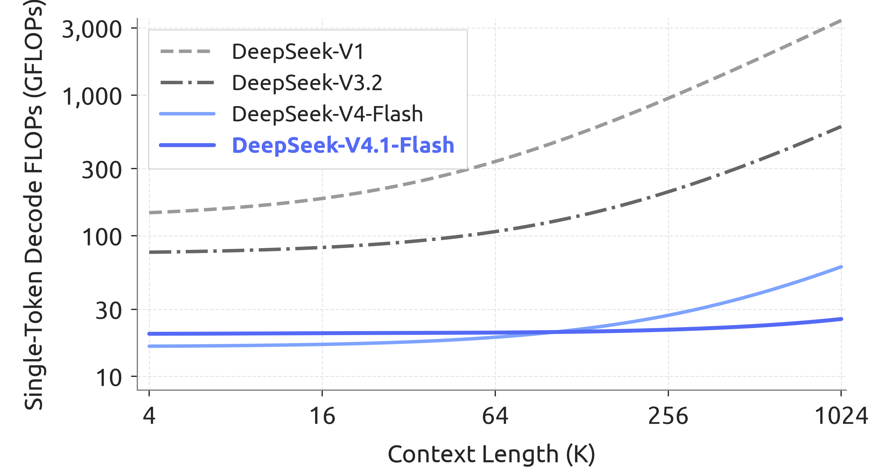
作为 CED 和 CSA2 的补充，我们进一步简化了原始 DeepSeek-V4 架构。此外，我们将原始 mHC (Xie et al., 2026) 升级为单遍 mHC，并配套 Mega-mHC 部署内核，使激活内存流量相较原始四内核实现减半。我们还集成了 Engram (Cheng et al., 2026b) 条件记忆模块，以增强模型能力；引入 DSpark (Cheng et al., 2026a) 推测解码架构，通过半自回归草稿生成和基于置信度调度的验证提高解码效率。 结合全部架构改进后，DeepSeek-V4.1-Flash 的单词元解码 FLOPs 在不同上下文长度下保持近乎恒定。图 2 表明，将上下文长度从 4K 扩大 256 倍至 1M，其解码 FLOPs 仅增加 1/4，显著低于 DeepSeek-V4-Flash 的增幅。
为充分实现这些架构设计带来的 KV 缓存压缩收益，并进一步提高训练和推理效率，我们系统性地协同优化 DeepSeek-V4.1-Flash 的训练基础设施与推理系统，确保大规模多模态训练和长上下文部署兼具效率与可扩展性。训练基础设施支持视觉编码器分离执行、面向长序列的均衡图像分片，以及用于注意力复用的跨阶段共享状态管理。推理系统实现了编码器和解码器的 SWA 有界重放通路。 进一步优化包括通信与计算重叠、Engram 嵌入表分片以及推理内核融合。特别是，每个处于复用模式的 CSA2 层在预填充期间仅执行 15 个内核，在解码期间仅执行 11 个内核。我们还在主机内存中将长期保存的全局 KV 存储与短期保存的编码器 SWA KV 分离，并使用有界重放近似重建缺失的编码器 SWA 状态。
预训练期间，我们在包含 45T 词元的大规模多模态语料库上训练 DeepSeek-V4.1-Flash。稀疏注意力从头开始以 64K 序列长度训练，无需任何稠密注意力预热阶段。预训练结束后，模型具备原生多模态能力，并支持最长一百万词元的上下文。 在我们的评测中，DeepSeek-V4.1-Flash-Base 仅使用 1/3 的总参数和 1/4 的激活参数，就达到了与 DeepSeek-V4-Pro-Base 相当的世界知识、推理和编程能力，并在留出集评测上取得 5%–10% 的提升。 这些结果共同体现了其优异的参数效率，也反映了面向真实部署的训练数据质量改进。
在这一基础模型上，我们通过后训练激发其推理与智能体能力。与上述架构创新不同，我们的后训练并未引入算法创新：配方遵循监督微调（SFT）之后进行强化学习（RL）和同策略蒸馏（OPD）的标准范式，没有超出 DeepSeek-V4 开发中成熟实践的任何修改 (DeepSeek-AI, 2026b)。实质性变化均在数据流水线中。我们开发了大规模自动化数据合成与环境构建流水线，并逐步扩大 RL 使用的数据、任务和轨迹规模，从而拓展模型在文本、多模态和智能体领域的能力。 图 1(a) 总结了 DeepSeek-V4.1-Flash 在核心智能体基准上的表现。评测表明，尽管规模紧凑，DeepSeek-V4.1-Flash 仍呈现出鲜明的能力特点：
-
•
推理。模型具备较强的推理能力，在数学和竞赛编程等推理密集型基准上维持高准确率，与 Kimi-K3(Team et al., 2026a)、DeepSeek-V4-Pro 等顶尖开源模型表现相当。
- •
-
•
多模态。在多模态领域，该模型尤其在视觉推理和专业图表解读基准上超越了 Kimi-K3 等顶尖开源竞争模型。除正式指标外，它还在前端开发、办公自动化等真实视觉智能体工作流中展现出实用价值，能够利用渲染后的屏幕截图进行视觉检查与自我纠正。不过，我们承认，相较超大规模闭源系统，整体性能仍存在明显差距。
这些结果表明，DeepSeek-V4.1-Flash 在绝大多数基准上已能匹敌前沿闭源模型，并能够完成超过 95% 的真实任务。同时，其较小的激活规模带来较低的推理延迟和服务成本。因此，我们认为 DeepSeek-V4.1-Flash 在能力与效率之间取得了良好的权衡，可以作为快速、经济的助手，支持广大用户的日常工作。总之，DeepSeek-V4.1-Flash 同时提升了模型智能和推理效率，并降低了部署成本。它大幅降低了规模化部署长程智能体的成本门槛，为其在更广泛场景中的应用创造了新机会。DeepSeek-V4.1-Flash 也是我们持续扩展规模的新起点。在这一基础上，我们将联合扩展模型架构、预训练和后训练，进一步探索模型智能的前沿。
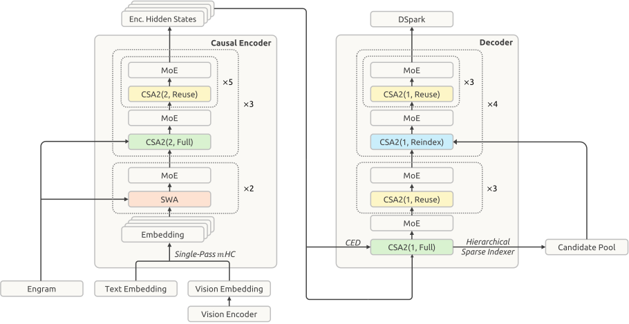
2 架构
2.1 概述
DeepSeek-V4.1-Flash 是一个多模态混合专家（MoE）Transformer，以图像和文本为输入，自回归地生成文本。其语言主干包含 40 层因果 Transformer，由 20 层因果编码器和随后的 20 层解码器组成。除前两层仅使用滑动窗口注意力（SWA）外，其余每层都同时包含全局注意力与 SWA。视觉编码器和 MLP 投影器将图像转换为视觉嵌入，并与文本嵌入共同处理；多模态数据从语言模型预训练之初便参与训练。总体而言，DeepSeek-V4.1-Flash 包含 552B 主干参数和 196B Engram 参数，预填充时每个词元激活 8B 参数，解码时激活 16B 参数。图 3 展示了 DeepSeek-V4.1-Flash 的整体架构。
因果编码器—解码器（CED）架构与压缩稀疏注意力 2（CSA2）分别针对长上下文推理中相互补充的成本问题。CED 从编码器输出构建解码器的全局键值（KV）缓存，使大多数提示词元可以跳过完整的解码器计算，同时保留各层自身的滑动窗口注意力。这几乎将预填充计算量减半，降低了上下文不断增长的智能体工作负载处理新增或未缓存输入的成本。CSA2 在层间共享全局 KV 以减少缓存存储，并复用稀疏选择结果以减少索引计算。在解码器中，分层稀疏索引器将后续索引器的搜索范围限制在较早索引器选出的候选池内，进一步减少每个查询需要评分的条目数。
我们保留了 DeepSeekMoE (Dai et al., 2024) 的共享专家与细粒度路由专家，并为图像和文本词元引入按模态区分的负载均衡 (Wang et al., 2024a)。单遍 mHC (Xie et al., 2026) 调整残差流的混合方式，以支持更高效的内核融合；Engram (Cheng et al., 2026b) 则加入稀疏访问的条件记忆。我们在主干预训练期间省略 MTP 模块，并使用 DSpark (Cheng et al., 2026a) 进行推测解码。DSpark 在主干预训练阶段结束后单独训练。此外，我们将主 KV 缓存压缩至 FP4，以进一步降低存储开销。后续各节介绍这些组件及相应的优化调整。
2.1.1 多模态架构
多模态输入通路由视觉编码器和 MLP 投影器组成。对于每幅输入图像，视觉编码器生成视觉特征的空间网格。随后， 像素逆重排（pixel-unshuffle）操作沿通道维重新排列各个局部邻域，在 MLP 投影器将特征映射到语言主干的隐藏维度之前先降低空间分辨率。最后，得到的视觉嵌入被插入输入嵌入序列中对应的图像词元位置，由语言主干与文本嵌入共同处理。
DeepSeek-ViT
我们从头训练了名为 DeepSeek-ViT 的视觉编码器，使其能够原生处理不同分辨率的图像。DeepSeek-ViT 基于 Vision Transformer (Dosovitskiy et al., 2021) 架构，并作了若干修改。为适应任意分辨率的输入，我们以 2D-RoPE 替代标准绝对位置嵌入。为使 ViT 更贴近大语言模型的设计原则，我们将图像块嵌入层的卷积替换为线性投影，以确保与 Muon 优化器兼容。此外，我们使用 RMSNorm (Zhang and Sennrich, 2019) 进行归一化，并采用 SwiGLU (Shazeer, 2020) 作为激活函数。将视觉特征输入大语言模型之前，我们通过带有 下采样的像素逆重排操作，将视觉词元数量减少为原来的九分之一，从而有效支持最高约 像素的输入分辨率。
面向 MoE 的多模态无辅助损失负载均衡
图像和文本词元具有不同的表示分布，可能在 MoE 中形成不同的专家路由偏好。因此，仅平衡两者的总负载可能掩盖各模态内部的负载不均衡。为解决这一问题，我们扩展了无辅助损失负载均衡 (Wang et al., 2024a)，为文本和图像词元分别维护各专家的校正偏置。在路由过程中，每个词元使用所属模态的校正偏置来选择专家，同时仍以原始路由得分对所选专家输出加权。每个训练步骤结束后，两组偏置根据各自的专家负载独立更新。这种设计在每种模态内部平衡专家利用率，有助于实现稳定而高效的多模态训练。
2.2 因果编码器—解码器（CED）
在智能体工作流中，频繁的工具调用产生大量预填充请求，当 KV 缓存未命中时，会造成严重的计算开销。为缓解这一预填充瓶颈，我们受 YOCO (Sun et al., 2024) 启发，提出因果编码器—解码器（CED）架构。YOCO 允许上半部分层直接共享下半部分层生成的 KV 缓存，从而减少预填充计算。基于这一思路，CED 引入了一系列结构改进，以增强整体 KV 缓存容量和 KV 生成的计算深度。因此，CED 在保持与基线相当性能的同时，成功减少了近一半的预填充计算量。
对于全局注意力，CED 将 Transformer 底部的 层视为因果编码器。对于上半部分层（即解码器，），KV 条目并非来自各层自身的隐藏状态 ，而是使用依赖于层的投影权重（ 和 ），直接由第 层的隐藏状态 投影得到：
| (1) |
其中， 和 分别表示 KV 条目及其对应的压缩权重。通过这一设计，CED 在预填充阶段只需计算前一半层，就能以极小的计算成本获得上层的全局 KV 缓存。
对于滑动窗口注意力（SWA），CED 在所有层中保留传统的逐层计算方式。具体而言，对于任意层 ，局部键和值都直接来自当前层的隐藏状态 。 这种设计有效增加了局部 KV 生成的计算深度。不过，保留这种逐层计算需要执行 SWA 重放。在预填充阶段，计算解码器的 SWA KV 缓存需要额外处理 个词元（其中 表示窗口大小）。对于每轮提示较短的多轮交互，解码器中的这部分计算开销便不可忽略。幸运的是，已有工作 (Chen et al., 2025) 表明，SWA 实际的有效感受野远小于理论上的 。受这一观察启发，我们引入解码器 SWA 有界重放：为进行 SWA 计算，仅对提示的最后 个词元执行预填充，从而显著降低计算成本。更多细节见第 3.2.2 节。
总体而言，当序列长度为 时，CED 将预填充复杂度由 降至 ，有效地将总计算量减半。
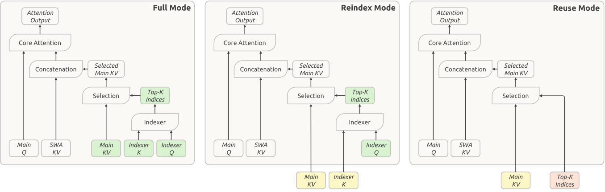
2.3 压缩稀疏注意力 2（CSA2）
服务长上下文需要同时控制 KV 缓存存储和注意力计算。可以沿三个具有乘法关系的维度降低这些成本：条目大小维度，例如 GQA (Ainslie et al., 2023) 减少 KV 头数，MLA (DeepSeek-AI, 2024a) 在多个头之间共享一个小型潜在表示；序列维度，将每 个词元压缩为一个条目，例如 DeepSeek-V4 (DeepSeek-AI, 2026b) 中的 CSA 和 HCA；以及层维度，让部分层复用其他层的缓存 (Brandon et al., 2024) 和选择结果，而不保留自己的，或直接将其替换为更高效的层。已有工作表明，沿层维度进行压缩是有效的：IndexCache (Bai et al., 2026) 跨层复用 Top-K 索引，以减少索引器计算；YOIO (Sun et al., 2026b) 仅计算一次稀疏路由，并在所有层之间共享；HySparse (Gao et al., 2026) 则让稀疏层复用稠密层的 KV 缓存。不过，单独复用索引并不节省主 KV 存储，全网络共享路由会限制性能，而混合设计仍保留全注意力层；更关键的是，这些方法都未覆盖全部三个具有乘法关系的维度。
CSA2 联合利用这三个维度：它跨层共享主 KV 和索引器 K，并允许各层复用 Top-K 索引，同时将缓存共享与索引复用解耦。它将这些复用策略与简化的压缩器、分层稀疏索引器结合起来，后者缩小了解码器后续索引层的搜索范围。
与 CSA 类似，CSA2 包含一个轻量级索引器，利用索引器 Q 和索引器 K 对主 KV 条目评分，并为每个查询选出 Top-K 条目。每个 Q 会同时关注所选条目和该层局部的滑动窗口 KV（SWA KV）。CSA2 还将未压缩的主 KV 配置纳入其中，作为压缩比为 1 的特例。与此同时，CSA2 对压缩器和索引器都进行了简化。在 CSA 中，压缩比为 时，每个主 KV 条目由 个原始 KV 缓存条目生成，相邻压缩条目的来源条目之间存在重叠。CSA 还引入绝对位置嵌入，在压缩时编码这 个条目的位置。CSA2 去除了这种重叠与绝对位置嵌入。此外，CSA2 通过对主 KV 条目进行投影来获得索引器 K，替代了 CSA 中从隐藏状态出发的独立压缩通路。这两项设计都简化了实现并提高了训练效率。
2.3.1 跨层 KV 与索引复用
每个 CSA2 层都被静态分配为三种模式之一：完整（Full）、重新索引（Reindex）或复用（Reuse）。在三种模式中，该层都会计算自己的查询和 SWA KV，并与选中的主 KV 条目一起生成新的注意力输出。模式之间的差别在于如何获得主 KV、索引器 K 和 Top-K 索引。图 4 展示了这三种模式。
完整模式。该层计算自己的主 KV 和索引器 Q，由主 KV 投影出索引器 K，并运行索引器生成新的 Top-K 索引。因此，它执行完整的 CSA2 计算通路，各组件的职责与 DeepSeek-V4 中一个完整 CSA 层相同。
重新索引模式。该层复用前面某一层最近可用的主 KV 及其对应的索引器 K。索引器计算自己的查询，对复用的键重新评分，并生成新的 Top-K 索引。这样，主 KV 和索引器 K 保持共享，而稀疏选择结果仍可在不同层之间变化。
复用模式。该层复用最近可用的主 KV，以及此前完整模式或重新索引模式层针对该主 KV 计算的最新Top-K 索引。它直接利用这一选择结果执行注意力计算，无需计算索引器 Q，也无需计算索引得分。
共享主 KV 和索引器 K 可减少缓存存储，而复用 Top-K 索引可避免额外的索引器计算。重新索引模式在保持缓存共享的同时，允许所选条目跨层发生变化。 当 CSA2 与 CED 结合时，分配为完整模式的解码器层会从第 层（即因果编码器最后一层）的隐藏状态计算自己的全局 KV。重新索引模式和复用模式保持不变。
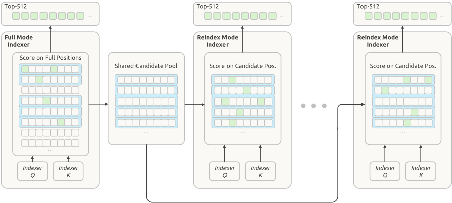
2.3.2 分层稀疏索引器
跨层索引复用减少了索引器求值次数，但其余索引器仍需对因果可见的完整上下文评分。对于极长上下文，这一成本仍是主要计算瓶颈。已有工作在词元级索引之前先对池化后的块表示进行评分与剪枝，从而引入索引器稀疏性 (Xu et al., 2026b)。我们发现，在解码器中，可以自然地利用较浅索引器的信息，限制较深索引器所考虑的候选项，而无需增加任何额外状态。因此，我们引入分层稀疏索引器，仅在 CED 解码器中使用，以减少解码期间重复评分的开销。对于每个查询，首个分配为完整模式的层构建一个候选池，后续重新索引层将其作为搜索域。当候选池大小固定时，较深索引器处理每个查询的成本就从随上下文长度线性增长变为常数。这一机制具有训练感知能力，并在后训练中引入：训练与推理采用相同的候选限制，因此较深索引器在优化时使用的搜索域与推理时一致。图 5 展示了这一过程。
首个完整模式层对因果可见的所有主 KV 位置评分，并为自身注意力生成 Top-K 索引。它还按块选择候选项：每个块的得分取其所含位置中的最大索引得分，再选择得分最高的块。随后，它收集所选块覆盖的位置，组成一个大于最终 Top-K 集合的候选池。例如，选择 2,048 个块，每个块包含 8 个位置，可得到 16,384 个候选位置。这个池规定后续索引器的搜索范围；最终的 Top-K 选择则决定每层读取哪些主 KV 条目。
后续处于重新索引模式的层，仅对相应查询的候选位置评分，并在该池内选取自己的 Top-K 条目。复用模式层不执行新的索引计算，而是使用针对所复用主 KV 计算的最新 Top-K 索引。因此，各索引层共享候选池，但最终选择结果可以不同。
当候选池大小固定时，每个后续索引器对每个查询评分的位置数都有一个与上下文长度无关的上界。首个完整模式层仍需扫描整个因果可见范围。因此，分层索引在保留最初全范围扫描的同时，降低了后续索引器求值的成本。
2.4 高效架构扩展
2.4.1 单遍 mHC
我们在 DeepSeek-V4 中引入了 mHC (Xie et al., 2026)，在相邻 Transformer 块之间维护 条残差流。对于每个词元，用 表示这些残差流，其中 是块索引， 是隐藏维度。残差流按如下方式更新：
| (2) |
其中，、 和 是从 预测的逐词元系数。系数预测器 包含归一化和投影。
理想情况下，两个块之间的残差变换是从 到 的单次映射，其中 为当前块的输入， 为前一个块的输出。这一映射需要读取 、写入 ，因此激活内存流量的下界为 。 实际中，DeepSeek-V4 对式 (2) 采用多遍实现，三个内核由于数据依赖关系而顺序执行：
| Residual update, contraction over | (3) | ||||
| Coefficients, contraction over | (4) | ||||
| Input mixing, contraction over | (5) |
这三个内核分别读取 、 和 个值，总共写入 个值。计入 中的前置归一化后，总激活内存流量为 ，是该下界的两倍。
在 中，归一化权重离线折叠到投影权重中，RMS 除法在投影之后执行。因此，三个阶段中的两个可以共用一次残差遍历：残差更新不需要沿隐藏维度进行归约，因此可以计算 的每个分块，并立即用于累积投影输出及计算 RMS 所需的平方和。 输入混合无法融合进这次遍历，因为只有所有隐藏维分块的归约都完成后， 才可用。因此，它需要再次读取 。第二遍还可以合并输入的前置归一化。这种两遍实现总共需要 个激活值的读写，比下界多读取一次 。
因此，我们引入单遍 mHC，将输入混合系数错开一个块，也就是每个块使用前一个块生成的混合系数，从而消除上述依赖：
| (6) |
现在输入混合使用 而非 ，因此不再依赖从 计算的系数。于是， 的每个分块都可以立即用于输入混合和系数预测，无需等待完整归约。实证结果显示，这种错位带来的性能下降可以忽略。
预训练阶段，我们保留现有的多内核实现，因为这种错位只改变各个块所使用的混合系数。 部署时，我们将残差更新、输入混合和系数预测融合到一个名为 Mega-mHC 的内核中。该内核以 个激活值的读写实现 mHC，并以 个激活值的读写实现单遍 mHC。 Mega-mHC 沿隐藏维度对 分块处理。每个分块既用于计算混合输入，也用于累积预测下一个块的 所需的量。该内核还合并了输入前置归一化与 FP8 转换。 这样，残差只读取一次、写入一次，达到理想映射所需的 次读取和 次写入，将原始实现的激活内存流量减半。
2.4.2 Engram
我们为 DeepSeek-V4.1-Flash 加入 Engram (Cheng et al., 2026c)，即此前工作提出的条件记忆模块，用于将记忆与计算解耦。我们沿用 Engram 原有的词元化器压缩、多头哈希、上下文感知门控和多分支集成设计，并作两项修改。首先，我们省略短因果卷积，因为其性能收益不足以抵偿给推理技术栈带来的额外复杂性。其次，我们对 Engram 嵌入采用基于动量的更新，再执行 Sinkhorn 均衡，详见第 2.5 节。
我们将 196B Engram 参数平均分配到两个模块。每个模块采用 -gram 阶数 ，每个阶数有 8 个哈希头，嵌入总维度为 2048。每个头索引一张约含 16M 条目的表，各表大小选为不同的素数。嵌入表和键/值投影均采用 FP8 精度。为平衡训练流水线各阶段的内存使用，两个模块分别置于第 1 层和第 14 层（从 0 开始编号）。推理期间，确定性寻址使嵌入可以通过后台 RDMA 传输从主机内存预取；第一个模块的预取与第一个 Transformer 块的计算重叠进行。Engram 训练和推理的更多实现细节见第 3.1.3 节。
2.4.3 DSpark
我们为 DeepSeek-V4.1-Flash 配备 DSpark (Cheng et al., 2026a)，这一推测解码模块将半自回归草拟与基于置信度调度的验证相结合。草拟器包含三个 Transformer 块，其滑动注意力窗口为 128 个词元。对这些块执行一次前向传播，就能并行计算五个草稿位置的基础 logits，同时用一个轻量级 Markov 头建模草稿词元之间的依赖关系。置信度头预测各位置的条件接受概率，并据此估计前缀存活概率。调度器将这些估计与预先测量的引擎吞吐量曲线结合，动态选择每个请求的验证长度，以在当前系统负载下最大化全系统的预期词元吞吐量。
DeepSeek-V3 (DeepSeek-AI, 2024b) 的 MTP 模块在整个预训练过程中与主干联合训练，而 DSpark 在预训练结束后的专门阶段才引入。在这一阶段，我们冻结主干，仅训练 DSpark。后训练期间，DSpark 继续与主干一起训练，但不将 DSpark 目标的梯度传播到主干中。这样可以使 DSpark 与不断演进的策略保持对齐，既加速在线服务，也加速 RL 和 OPD 的轨迹生成。
2.4.4 FP4 主 KV 缓存
长上下文智能体工作负载需要为每个请求维护较大的 KV 缓存，从而增加服务成本。DeepSeek-V4 已对 FP4 索引器的查询和键采用量化感知训练（QAT） (Jacob et al., 2018)，以加速索引计算并减小索引器缓存。虽然其他格式在我们的实验中精度更高，我们仍采用 OCP 标准的 MXFP4 格式 (Rouhani et al., 2023)，以支持尽可能多的硬件平台。 现在，我们将 QAT 扩展到主 KV 缓存；这里 FP4 的作用是减少存储，而非加速矩阵乘法。在注意力计算前对缓存值反量化，使我们能够使用更精确的格式，而无需硬件原生支持这种格式的矩阵乘法，从而保持跨硬件平台的兼容性。
在所评估的约四比特格式中，我们选择 E2M1，并为每 16 个通道配置一个 E4M3 缩放因子，沿用 NVFP4 (Alvarez et al., 2025) 的设计，但省略第二级全局缩放因子，以平衡精度与简洁性。 即使省略这一缩放因子，主 KV 缓存的动态范围仍然充足：该格式支持的幅值最高为 ，远高于缓存幅值的上界。在 DeepSeek-V4.1-Flash 中，训练后的 RMSNorm 权重最大幅值约为 。经过 RMS 归一化后， 通道 KV 潜在表示的 L2 范数至多约为 。RoPE 保持这一范数，因此旋转后各通道的最大绝对值也以约 为界。此外，训练期间观测到的最大幅值约为 。因此，省略全局缩放因子不会带来可测得的精度下降，同时简化了缓存布局。
为了在 DeepSeek-V4.1-Flash 中支持 FP4 主 KV 缓存存储，我们在后训练期间引入 QAT。非 RoPE 部分与 RoPE 部分使用相同的量化格式。我们在 RoPE 之后量化缓存：实验中，在 RoPE 之前量化仅带来很小的精度提升，却会在解码期间引入额外开销。 由于 SWA KV 缓存对量化较敏感，我们仍对其保留 FP8。 与 DeepSeek-V4 的 FP8 主 KV 缓存相比，该格式无论存放在 HBM 中还是卸载到 SSD，都将存储占用减少了近一半。
2.5 优化
在 DeepSeek-V4 的优化配置基础上，我们作出若干新调整，以更好地适应架构设计。
首先，我们采用逐头 Muon，在执行 Muon 更新之前先按注意力头划分 Query 权重。下面简要说明这一设计的动机。 若将 Muon 视为预条件梯度下降，标准 Muon 为所有头使用同一个预条件器，而逐头 Muon 为不同头提供不同的预条件器。这种设计能更好地处理注意力头之间的异质性 Zhang et al., 2024; Zhang, 2026, Section 3。 因此，我们观察到逐头 Muon 优于标准 Muon。GLM 5 (Zeng et al., 2026) 和 Kimi-K3 (Team et al., 2026a) 也验证了逐头 Muon 的实证优势。
其次，对新引入的 Engram 参数使用 Adam 会显著增大优化器状态的内存占用。 为减少训练内存，我们改用基于动量的更新，再执行 Sinkhorn 均衡，来优化 Engram 嵌入表、词元嵌入和预测头。 SinkGD (Scetbon et al., 2025) 此前已将 Sinkhorn 均衡应用于线性层的权重矩阵；这里我们将其推广到这些大型参数矩阵。 与 Muon 一样，这种方法只需要一个动量缓冲区，同时在实证性能上优于 Adam。
基本配置。
对于归一化层权重和其他非矩阵参数（包括偏置和缩放因子），我们保留 AdamW (Loshchilov and Hutter, 2019)。 对于语言模型主干线性变换的权重矩阵、Engram 投影层和视觉—语言投影器，我们使用 Muon (Jordan et al., 2024)；对于 Query 和 Key 权重，则使用逐头 Muon。 我们为 Muon 采用解耦权重衰减与 Nesterov 动量 (Nesterov, 1983; Liu et al., 2025)；归一化层权重也进行权重衰减，偏置和缩放因子则不进行。 经过 Sinkhorn 均衡的更新同样使用 Nesterov 动量，但不进行权重衰减。 预训练期间，视觉编码器保持冻结，直至学习率衰减阶段，而其最后的归一化层及视觉—语言投影器始终可训练。学习率开始衰减时，我们解冻视觉编码器，以较小学习率与大语言模型联合优化。
Engram / 嵌入 / 预测头的 Sinkhorn 均衡更新。
算法 1 总结了完整过程。 整体流程与 Muon 相同，只是以 Sinkhorn 均衡替代 Newton–Schulz 正交化。 我们用 表示矩阵中较大的维度，对嵌入表和预测头而言即词表大小；用 表示隐藏维度。
给定 Nesterov 动量更新 ，Sinkhorn 均衡寻找对角缩放矩阵 和 ，使得
| (7) |
因此，该过程近似地均衡了更新矩阵的逐行与逐列 RMS。这里，一行对应一个词元索引或 n-gram 标识，一列编码一个隐藏特征。Sinkhorn 均衡通过沿行、列两个方向进行归一化，利用这种词元—特征结构。 为保证数值稳定性，满足 的行会被屏蔽。系数 将单位行 范数转换为单位逐行 RMS。此外，我们将有效学习率调整为 ，以匹配 Adam 的更新幅度。我们设定 ，接近 Moonlight (Liu et al., 2025) 所用的系数 。
更广泛地看，Sinkhorn 均衡与利用矩阵或张量轴结构的优化器密切相关 (Shazeer and Stern, 2018; Zhang et al., 2025a; Wen et al., 2025; Glentis et al., 2025; Deng et al., 2026; Yuan et al., 2026; Xu et al., 2026a)。例如，Adafactor (Shazeer and Stern, 2018) 以另一种方式执行逐行和逐列归一化；Adam-mini (Zhang et al., 2025a) 则为嵌入表和预测头采用另一种逐行归一化方法。这些归一化策略的优化性能与通信开销可能不同。我们将更深入的研究留待未来开展。
3 通用基础设施
3.1 训练基础设施
3.1.1 多模态训练基础设施
对比学习中的通信与计算重叠。
视觉编码器首先通过对比目标优化，再使用生成式下一词元预测损失进行微调。在对比学习阶段，损失基于整批文本—视觉样本对计算，因此必须在数据并行进程之间对两种模态的特征分别执行 all-gather，带来较大的通信开销。由于文本特征的梯度仅依赖于汇集后的视觉特征，而视觉特征的梯度同样仅依赖于汇集后的文本特征，每次 all-gather 都可以与前向或反向传播重叠，而无须让流水线停顿：
其中， 和 分别表示视觉与文本特征， 表示计算 与通信 重叠， 表示梯度计算。在这一调度中，视觉特征在文本前向传播期间汇集，文本特征在文本反向传播期间汇集，从而使两次 all-gather 均完全隐藏在有效计算之后。
端到端并行。
长序列多模态训练优化。
DeepSeek-V4.1-Flash 在最长一百万词元的序列上训练，预训练与后训练阶段均有相当比例的训练采用超长序列。在这样的序列长度下，多模态样本会造成严重的 I/O、CPU 和内存瓶颈。
-
•
均衡图像分片。 预训练时，单个图像密集的超长序列就可能在加载期间耗尽一台主机的 I/O、CPU 和内存资源，因此每个序列的图像会以负载均衡方式分片到各上下文并行（CP）进程，每张图像只加载一次。在图像仅读取一次的情况下，只要满足
加载开销就可以隐藏在计算之后。其中， 为词元数， 为每个词元的原始字节数， 为每个词元的计算量，、 分别为文件系统与 GPU 带宽。由于 被约去，这一判据只涉及每词元量（ 和 ），与序列长度和集群规模无关； 由视觉模块配置决定，例如分辨率上限或空间下采样设置。因此，存储吞吐量仅会成为每词元计算量较低的小模型的瓶颈，例如消融实验中的模型，而生产规模的模型仍受计算限制。
-
•
增量图像传输。 除上述均衡分片外，强化学习轨迹生成仅以增量方式向推理引擎传输图像，并将引擎在 CPU 侧的解码与预处理输出缓存到分布式文件系统，供多次轨迹生成及后续训练复用。
3.1.2 CSA2 的注意力共享训练
在第 2.3 节中，我们介绍了具有三种模式的注意力共享方法 CSA2，其中一些模式会跨多层共享主 KV、索引器 K 和 Top-K 索引中的一个或多个组件。在大规模分布式训练中支持 CSA2，除了注意力计算本身，还需要额外的协调。尤其是，共享注意力组件的层可能被放置在不同的流水线阶段，使得直接模块复用无法兼容传统的阶段内执行方式。因此，我们采用以下设计来支持 CSA2 训练。
影子索引器通过在每个参与阶段放置轻量级可执行副本来解决这一问题，同时为共享参数保留唯一的逻辑所有者。所有者仍负责优化与检查点保存，而参数同步和梯度聚合使这些影子副本在整个训练过程中保持一致。该设计保留原有模型语义，无须流水线调度器将共享层视为特殊执行单元。
流水线通信载荷扩展在源层和使用层跨越流水线边界时，提供下游使用者所需的中间表示和稀疏路由信息。这些状态被纳入现有的点对点通信路径，并按与上下文并行一致的方式分区，在维持相应梯度流的同时避免不必要的复制。
微批次级共享状态管理跟踪并发活跃的流水线微批次所关联的状态，并在前向执行、激活重计算和反向传播之间协调其生命周期。共享状态一直保留到最后一个使用者完成处理，随后立即释放，以限制额外内存开销。同一运行时抽象还处理阶段放置和源—使用者关系，使注意力实现可以访问共享状态，而不依赖具体的物理流水线布局。
结合对优化器、检查点、预热和计算图追踪流程的轻量调整，这些机制使 CSA2 能够在现有分布式训练接口与流水线调度下透明运行。
3.1.3 Engram
Engram 嵌入表按行划分到专用进程组，各组大小由 Engram 并行度决定。 进程组大小控制着每个设备的内存占用与嵌入查找通信范围之间的权衡。 优化器状态进一步在各表分区的副本之间分片。 Engram 查找索引仅取决于输入词元序列。 因此，在每个流水线阶段开始处理当前训练步骤的微批次之前，就会为整个本地批次启动嵌入预取，以尽量减少对流水线执行的干扰。 嵌入梯度在反向传播期间缓存，并在主干网络反向传播结束后返回其所属进程。 为高效整合多模态训练，嵌入预取和梯度传输被安排为与视觉编码器的前向、反向计算重叠。 嵌入以 FP8 存储和获取，取回的值及缩放因子直接传递给后续 GEMM。更新 Engram 表时，Sinkhorn 归一化在各次迭代之间维护行、列缩放向量，以避免反复写入完整的归一化矩阵。行归一化与部分列统计量的累积被融合到单个内核，进一步减少内存访问。在 RL 轨迹生成期间，Engram 嵌入表常驻 GPU 内存。 这种放置方式减轻了主机内存压力，并有助于避免主机内存碎片引起的内存耗尽故障。
3.2 推理系统
DeepSeek-V4.1-Flash 的设计将推理效率作为首要考量。尽管其架构在概念上较为复杂，最终的推理内核流程却十分简洁。通过合理的内核融合，我们将复杂操作封装起来，并在少量融合内核内部让硬件资源保持充分流水化运行；这些内核包括 FlashMLA (Li and Liu, 2025) 中融合 RoPE、注意力、RoPE 和类型转换的内核，DeepGEMM (Zhao et al., 2025) 中的 Mega-Gate、Mega-mHC和 Mega-MoE 内核，TileKernels (Wang et al., 2026a) 中的内核，以及 DeepSelect (Qian et al., 2026) 中的 TopK 内核。由此，绝大多数 Transformer 层——即 CSA2 采用复用模式的层——在预填充期间仅执行 15 个内核，在解码期间仅执行 11 个内核，从而同时实现高吞吐量与低延迟推理。
在部署层面，我们采用编码器—预填充—解码（EPD）分离，使视觉编码、预填充与解码可以独立扩展并重叠执行。
3.2.1 持久化 KV 缓存管理
在相同工作负载下，V4.1 将持久化 KV 缓存占用降至 V4 的 1/8。这一缩减来自两个相乘的因素：持久化 KV 缓存不再存储 SWA KV，使其大小几乎减半；而通过架构与精度优化，其中保留的全局 KV 占用又进一步压缩至 V4 的 1/4。
在 V4 部署中，SWA KV 占持久化 KV 缓存容量的近一半。在该缓存内部，全局 KV 与 SWA KV 独立管理，并采用 LRU 淘汰策略。全局 KV 被完整存储，命中时复用完整前缀。相比之下，SWA KV 仅在两个特定位置缓存——提示词末尾和输出末尾——以支持重新生成和多轮会话；命中后，计算可以从该缓存位置恢复。为保持较高命中率，我们在 SSD 上配置了足够大的持久化 KV 缓存，使两类 KV 在典型工作负载下均能驻留超过 72 小时。 尽管仅在指定位置保留 个 KV 条目，未压缩的 SWA KV 缓存仍会带来可观的存储开销，尤其是在每轮较短的多轮对话中。
持久化存储 SWA KV 既昂贵又低效，因为其访问模式与持久化 KV 缓存的长期保留策略不匹配。全局 KV 具有长尾复用特征，而 SWA KV 仅在活跃会话内部一个狭窄的、分钟级窗口内被复用，一旦会话结束或下一轮开始，便不再使用。V4 技术报告提出了零 SWA 缓存，通过重计算缺失的 SWA KV 来避免存储开销。然而，精确恢复需要对 个词元执行完整前向传播，其成本在生产部署中被证明过高。
因此，V4.1 按以下方式调整持久化 KV 缓存管理：
-
1.
SWA KV 不再进入持久化 KV 缓存，而是存储在由每台机器 10% 主机 DRAM 构成的分布式内存池中。尽管这一池的总容量小得多，其较短的 TTL（仅数分钟）使过期条目能够立即回收并用于新会话；在真实工作负载下，这种高周转率足以服务绝大多数并发活跃会话。全局 KV 仍保留在持久化 KV 缓存中，并保证至少 72 小时的存活时间。
-
2.
淘汰 SWA KV 不可避免地会造成未命中，但借助轻量级回退机制——编码器 SWA 有界重放（详见第 3.2.2 节）——其成本仍可承受。对于不可避免但并不频繁的全局 KV 命中、SWA KV 未命中的请求，该机制只需重计算 个词元即可恢复缺失状态，无须对 个词元执行完整前向传播。这种有界重放是该设计的基石：它将代价高昂的未命中转化为平稳、低成本的性能退化，从而为从持久化 KV 缓存中移除 SWA KV 提供依据。
3.2.2 SWA 有界重放
由于 SWA 依赖会跨层累积，精确重建 层的 SWA KV 需要重放 个词元。SWA 有界重放则仅重放最近的 个词元，并将 SWA 截断到重放片段内，从而接受近似状态：若重放从位置 开始，位置 的查询只关注 范围内的 SWA 键。
编码器 SWA 有界重放。
编码器 SWA 有界重放使前缀缓存仅依赖全局 KV，从而能够从持久化 KV 缓存中移除 SWA KV。
当编码器 SWA KV 缺失时，我们重放已缓存前缀的最后 个词元，并将其与未缓存后缀一起处理。重放词元仅重新生成 SWA KV，复用已缓存的全局 KV，而不重新计算或覆盖它；未缓存后缀则同时生成全局 KV 和 SWA KV。
按这一设计，重放得到的前缀状态是近似的，因此为未缓存后缀计算的全局 KV 和 SWA KV 取决于缓存命中位置，在不同位置下并不具有数学上的同一性。 令人鼓舞的是，我们的实验证据确认，该有界重放策略几乎不影响回答质量。
解码器 SWA 有界重放。
解码器 SWA 有界重放将解码器前向传播限制在 个词元内，使总预填充计算量几乎减半。
在 CED 中，解码器全局 KV 由编码器最终隐藏状态投影得到。让预填充在编码器处结束的唯一障碍是解码器 SWA KV，它由各解码器层自身的隐藏状态生成，并为最初几个解码步骤所必需。由于我们从不缓存解码器 SWA KV，要精确重建它，就必须让 个解码器层处理提示词最后 个词元；当一个很短的未缓存后缀接在很长的已缓存前缀后时，这一操作成本很高。因此，我们也在该场景中采用有界重放策略：每次预填充时，重放提示词最后 个词元，将其编码器输出送入采用相同 SWA 截断方式的解码器层，并将得到的解码器 SWA KV 仅用于解码，而不用于前缀缓存。
按这一设计，重建的解码器 SWA KV 与完整解码器前向传播得到的结果在数学上并不等价。同时，我们发现该策略对回答质量的影响可以忽略不计。为进一步提高稳妥性，我们还在后训练期间模拟相同的重放，使模型在训练中适应该机制。
4 预训练
4.1 数据构建
文本数据整理
为追求更高智能，我们不再局限于小规模数据实验所反映的一般性样本质量，而是更加关注能提供独特信息增益的多样化语料之间的整体交互。 我们采用更系统化、标准化的数据构建流水线，以提升数据质量并优化数据混合。 具体而言，我们基于更全面的评估，精心设计覆盖模型参数与训练数据规模的扩展阶梯，以指导大规模训练运行。 我们过滤掉信息增益有限的模型生成内容，包括能力较弱模型的输出以及低质量机器翻译文本。我们将此类内容视为隐性重复，因为它们主要是在重新表述已有信息，在较长训练过程中可能产生不利影响。 我们还探索模型参与的数据迭代方法，为未来大规模合成数据奠定基础。 此外，我们邀请更多领域专家参与，构建细粒度的数据质量评估维度。 相较前一版本，新语料纳入了更多来自新近发布的开源仓库、提交、代码库及新兴框架的最新代码，以覆盖更广泛的编程语言，并更好地反映当代真实的软件工程场景。
多模态数据整理
我们的多模态预训练数据集主要由三类数据构成：图文对、交错图文数据和领域专用数据。 基于原始网络数据天然蕴含丰富多模态知识这一前提，我们没有进行大规模数据合成，而是优先清洗并以其原生形式利用这些数据，以在预训练期间实现最直接、可扩展的视觉知识压缩。在最初的数据收集过程中，我们发现爬取系统过度偏向以文本为中心的网页内容，因此从 Common Crawl 重新启动数据采集，以扩大多模态来源的覆盖范围。 对于图文数据，我们从网页中提取图像及其关联的替代文本，通过图文相关性阈值进行过滤，并基于图像语义去重。对于交错数据，我们主要从网页和 PDF 构建这一子集。 处理大规模多模态语料通常比处理纯文本语料需要更高的 CPU 与磁盘存储成本，因此我们将交错数据构建组织为成本逐级增加的多个阶段。 在获取图像之前，我们使用启发式与统计过滤、去重及质量模型筛选高价值文档。 随后，将保留下来的文档组装为交错图文序列，并再次以考虑图像内容的方式进行过滤和去重。 最后，我们使用 SmolVLM (Marafioti et al., 2025) 对图文内容进行严格质量评分，从而提取高质量交错数据。 在这一过程中被过滤掉的文档，有一部分通过筛选与重组回收为额外的图文对。 为弥补网络收集数据的固有限制，我们还纳入领域专用数据集，以增强模型的细粒度视觉感知能力（如视觉定位和指点）、光学字符识别（OCR）能力，以及对长尾知识的获取能力。我们还收集了大量图像—代码对和计算机使用轨迹，以改善多模态智能体理解能力。
数据整合与去重
由于纯文本与多模态数据经由不同流水线处理，我们将最终训练语料构建为两类数据源的并集。对于重叠样本，我们用多模态版本替换纯文本版本，并采用两种配置中较大的训练轮数。完成替换后，语料中纯文本与多模态数据的词元比例为 。 我们通过联合预取和分配训练样本，尽量减少预训练与上下文扩展期间的样本重叠。 超长文档在混合前经过确定性的预切分，以确保训练词元在数据分片和训练步骤之间均匀分布。我们进一步改进最佳适配打包算法，将填充率控制在至多 。
4.2 预训练设置
4.2.1 模型设置
我们将 Transformer 层数设为 40，隐藏维度 设为 5120。 采用因果编码器—解码器架构，其中编码器包含 20 层，解码器包含 20 层。 前两层使用纯滑动窗口注意力。 其余 18 个编码器层使用压缩率为 的 CSA2。 这些层划分为三个配置相同的组，每组六层。 每组第一层采用完整模式，其余五层采用复用模式。 20 个解码器层使用压缩率为 的 CSA2。 这些层划分为五个组，每组四层。 第一组的第一层采用完整模式，其余三层采用复用模式。 其余四组采用相同配置：第一层采用重新索引模式，其余三层采用复用模式。 对于所有 CSA2 层，我们将索引器查询头数设为 32，索引器头维度设为 128，为稀疏注意力选择的 KV 条目数（即注意力 top-k）设为 512。 查询头数设为 64，头维度设为 512，查询压缩维度设为 1280。 对于分层稀疏索引器，我们最多选择 2,048 个块，每块包含 8 个位置，从而总计得到至多 16,384 个候选位置。 输出投影组数设为 8，每个中间注意力输出的维度设为 1024。 额外滑动窗口注意力分支的窗口大小 设为 128。 我们在所有 Transformer 块中使用 MoE 层，采用 SwiGLU 激活函数，并以阈值 10 进行截断 (OpenAI, 2025)。 每个 MoE 层包含 1 个共享专家和 384 个路由专家，每个专家的中间隐藏维度为 2304。 在路由专家中，每个词元会激活 6 个专家。 对于 mHC，扩展因子设为 4，Sinkhorn-Knopp 迭代次数设为 20。 对于视觉编码器，我们将层数设为 32，隐藏维度设为 1024，注意力头数设为 16，图像块大小设为 14。视觉 MLP 投影器包含 2 层，隐藏维度为 5120。 在这一配置下，DeepSeek-V4.1-Flash 包含 552B 主干参数，预填充时每个词元激活 8B 参数，解码时激活 16B 参数。
4.2.2 训练设置
我们对线性变换参数使用 Muon 优化器 (Jordan et al., 2024; Liu et al., 2025)，对所有 RMSNorm 模块权重及其他非矩阵参数使用 AdamW 优化器 (Loshchilov and Hutter, 2019)，对全部嵌入与预测头使用 Sinkhorn 均衡更新。 对于 AdamW，我们将超参数设为 、、 和 。 对于 Muon，我们将动量设为 、权重衰减设为 ，并将每个更新矩阵的 RMS 重新缩放为 ，以复用 AdamW 的学习率。 对于 Sinkhorn 均衡更新，我们采用与 Muon 相同的动量系数和学习率修正因子，并设置 、、。 遵循 (Cheng et al., 2026b)，Engram 的学习率扩大为 。 我们使用 45T 词元的多模态数据训练 DeepSeek-V4.1-Flash，未出现不稳定现象。 整个训练过程中，批次大小固定为 100.6 百万词元。 学习率在最初 2000 步线性预热，随后保持在 ，直至训练到 28T 词元。 在 28T 至 40T 词元之间，我们按余弦计划将学习率衰减至 。 从 40T 至 45T 词元，学习率维持这一数值。 模型从头开始以稀疏注意力和 64K 序列长度训练，并在训练到 34T 词元时将序列长度扩展至 1M。 对于无辅助损失负载均衡，我们将图像与文本词元的偏置更新速度均设为 0.001，同时保留一个较小的序列级均衡损失，其损失权重为 0.0001，以避免单个序列内出现极端不均衡。 与 DeepSeek-V4 类似，我们在预训练期间使用样本级注意力掩码。
视觉编码器训练。
DeepSeek-ViT 在整合到语言主干之前经历独立训练阶段。训练流水线包含两个阶段：对比预训练与自回归微调。对比预训练时，我们在来自替代文本数据的约 47B 图文对上，采用 SigLIP (Zhai et al., 2023) 提出的 sigmoid 对比损失优化模型。为从如此大规模的数据集中高效学习视觉表示，我们在保留宽高比的前提下缩小较大图像，将最大输入分辨率限制为 像素。尽管这一阶段采用更高分辨率会带来明显收益，实证结果表明，这些收益对最终模型的贡献很小。由于后续自回归阶段专门处理高分辨率外推，在对比预训练期间提高分辨率会显著增加计算开销，却不会带来多少总体提升。 在自回归微调阶段，我们将视觉编码器连接到一个 4B MoE LLM，采用下一词元预测目标，在包含图像描述、替代文本、图表和 OCR 的数据集上训练 236B 词元。这一阶段旨在增强编码器对细粒度视觉特征的建模能力。因此，我们按比例缩放超出范围的图像，将输入分辨率限制在 至 像素之间。该阶段结束后，我们丢弃 LLM，仅保留优化后的视觉编码器用于后续预训练流水线，并继续采用相同的输入分辨率策略。
4.3 评估
4.3.1 评估基准
我们将 DeepSeek-V4.1-Flash-Base 与前代模型 DeepSeek-V4-Flash-Base 和 DeepSeek-V4-Pro-Base 进行比较。报告的基准覆盖五个关键维度：世界知识、语言理解与推理、编程与数学、长上下文，以及多模态能力。
世界知识基准包括 AGIEval (Zhong et al., 2023)、MMLU-Pro (Wang et al., 2024b)、C-Eval (Huang et al., 2023)、 MultiLoKo (Hupkes and Bogoychev, 2025)、 SimpleQA-Verified (Haas et al., 2025) 和 SuperGPQA (Du et al., 2025)，
语言理解与推理基准包括 BigBench Hard（BBH） (Suzgun et al., 2022)、BigBench Extra Hard（BBEH） (Kazemi et al., 2025)、DROP (Dua et al., 2019) 和 HellaSwag (Zellers et al., 2019)，
编程与数学基准包括 BigCodeBench (Zhuo et al., 2025)、HumanEval (Chen et al., 2021)、GSM8K (Cobbe et al., 2021)、MATH (Hendrycks et al., 2021) 和 MGSM (Shi et al., 2023)，
长上下文基准包括 LongBench-V2 (Bai et al., 2025)。
多模态基准包括 MMMU-Pro (Yue et al., 2025)、DocVQA (Mathew et al., 2021)、CVBench (Tong et al., 2024) 和 RefCOCO/RefCOCO+/RefCOCO-g (Kazemzadeh et al., 2014; Nagaraja et al., 2016; Mao et al., 2016; Yu et al., 2016)。
| 基准 (指标) | 示例数 | DeepSeek-V4-Flash | DeepSeek-V4-Pro | DeepSeek-V4.1-Flash | |
|---|---|---|---|---|---|
| Base | Base | Base | |||
| 架构 | - | MoE | MoE | MoE | |
| 激活参数量 | - | 13B | 49B | 8B/16B | |
| 主干参数量 | - | 284B | 1.6T | 552B | |
| 世界知识 | AGIEval (EM) | 3-5-shot | 83.9 | 84.4 | 83.4 |
| MMLU-Pro (EM) | 5-shot | 68.3 | 73.5 | 74.1 | |
| C-Eval (EM) | 5-shot | 92.1 | 93.1 | 92.1 | |
| MultiLoKo (LLM-Judge) | 5-shot | 42.6 | 50.9 | 45.5 | |
| Simple-QA verified (EM) | 25-shot | 30.1 | 55.2 | 42.3 | |
| SuperGPQA (EM) | 5-shot | 46.5 | 53.9 | 53.1 | |
| 语言与推理 | BBH (EM) | 3-shot | 86.9 | 87.5 | 86.1 |
| BBEH (EM) | 1-shot | 25.4 | 29.8 | 27.2 | |
| DROP (F1) | 1-shot | 88.6 | 88.7 | 87.9 | |
| HellaSwag (EM) | 0-shot | 85.7 | 88.0 | 87.2 | |
| 编程与数学 | BigCodeBench (Pass@1) | 3-shot | 56.8 | 59.2 | 60.6 |
| HumanEval (Pass@1) | 0-shot | 69.5 | 76.8 | 79.4 | |
| GSM8K (EM) | 8-shot | 90.8 | 92.6 | 93.0 | |
| MATH (EM) | 4-shot | 57.4 | 64.5 | 61.1 | |
| MGSM (EM) | 8-shot | 85.7 | 84.4 | 80.2 | |
| 长上下文 | LongBench-V2 (EM) | 1-shot | 44.7 | 51.5 | 45.2 |
| 多模态 | MMMU-Pro (EM) | 4-shot | - | - | 56.5 |
| CVBench (EM) | 4-shot | - | - | 77.9 | |
| DocVQA (LLM-Judge) | 4-shot | - | - | 95.6 | |
| RefCOCO-avg (Acc@0.5) | 0-shot | - | - | 86.0 |
4.3.2 评估结果
在表 1 中，我们详细比较 DeepSeek-V4-Flash、DeepSeek-V4-Pro 和 DeepSeek-V4.1-Flash 的基础模型，所有模型均在内部评估框架下，以严格控制且可复现的设置进行评估。 相较 DeepSeek-V4-Flash-Base 和 DeepSeek-V4-Pro-Base，最新基础模型展现出显著的效率收益。DeepSeek-V4.1-Flash 激活的参数数目大幅少于 DeepSeek-V4-Pro-Base，KV 缓存占用也显著降低，但性能完全可与前代模型相当。 这些结果也反映了我们对预训练数据整理流水线所做的大幅改进。 在本版本中，我们引入原生多模态训练，并通过相应多模态评估验证其有效性。在更多样化的多模态语料上训练后，DeepSeek-V4.1-Flash 获得了与 DeepSeek-V4-Pro 相当的世界知识与理解能力。 在推理和编程基准上，DeepSeek-V4.1-Flash 持续进步，在多项基准上达到接近或优于 DeepSeek-V4-Pro 的表现。
为进一步评估模型在真实研发场景中的能力，我们还在专用内部语料上进行困惑度测试。由于无法通过模型 API 进行困惑度测试，我们主要关注自行预训练的基础模型。在语料选择上，我们根据日常开发收集独立评估集，包括内部文档、专有代码仓库和学术资料，目标是考查模型针对复杂科学问题与前沿研究的推理、归因和问题求解能力。结果见图 6，其中报告不同模型的每字节比特数（BPB），数值越低表示表现越好。
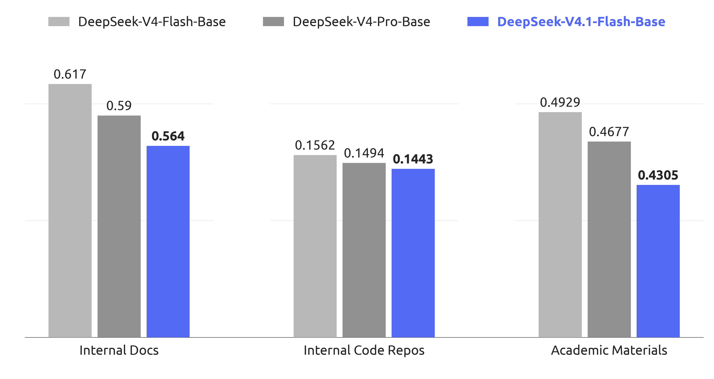
5 后训练
5.1 后训练流程
在本次发布中，我们没有引入新的后训练算法。整体方案遵循监督微调（SFT）、强化学习（RL）和同策略蒸馏（OPD；Gu et al., 2024; Lu and Lab, 2025）这一标准范式，除成熟实践之外，不作算法层面的修改。我们的工作几乎全部集中在模型训练所用的内容，而非优化方式上：我们投入建设大规模自动化的数据合成与环境构建流水线。具体而言，该流水线（i）合成多样、可验证的训练任务，以及对应的参考解答和奖励信号；（ii）通过程序化方式构建并扩展交互式智能体环境，使轨迹能够以低成本采集和评估；（iii）进行严格的过滤、去重和难度校准，确保数据质量与课程均衡。我们发现，在固定且并不特殊的优化流程下，观测到的性能收益基本上全部来自合成数据与环境在规模、多样性和可验证性上的系统性改进。这一观察也反映出一个更普遍的经验：在当前阶段，对数据和环境流水线进行工程改进，其边际回报显著高于后训练算法创新。
5.1.1 大规模智能体任务合成
任务是智能体学习的基本燃料。然而，构建高质量训练任务历来需要大量人工投入。我们观察到，模型已经开始展现自行构建训练任务的能力，尽管这项能力距离完善仍然很远。认识到这一潜力后，我们投入大量精力，增强模型的任务构建和质量验证能力。
我们将每个任务形式化为一个三元组（问题、环境、验证系统），并从两个维度评估其质量：难度——确保任务并非过于简单；正确性——保证三个组成部分之间不存在关键缺陷。我们以难度和正确性作为奖励信号，迭代训练模型，使其构建更好的任务。同时，我们对 RL 任务的整个生命周期进行监控。每当一个任务用于新一轮 RL 训练时，所产生的轨迹都会为质量复审提供新的证据。在这一总体框架下，我们针对通用智能体和编程智能体这两个核心场景，构建了专门的训练环境生产流水线。
通用智能体。对于通用智能体，我们鼓励内部员工和外部合作伙伴将最新模型纳入日常工作流程，并自愿回传交互数据和反馈。根据回传数据中观察到的接口，我们构建了大量模拟工具，复现真实工具和系统的接口与行为，包括输入格式、输出结构、API 模式及行为约束，覆盖常用 SaaS 和企业应用，以及更专门的业务后端系统。同时，我们大规模收集内部员工提交的负面反馈和模型失败案例，并将其纳入流水线，生成以真实工作流程为基础的单轮与多轮智能体环境。通过重建相关工具上下文、用户交互模式和失败条件，该流水线支持系统性地重放失败，并针对观察到的模型弱点开展强化学习。
编程智能体。编程智能体的训练环境来自两个来源：1）内部员工和外部合作伙伴的编程智能体会话，经过筛选后保留高度复杂的任务或模型表现不佳的任务，再按轨迹去重；2）达到一定星标数门槛的公开 GitHub 仓库。环境构建由多个专门的智能体协作完成。首先，一个智能体判断项目能否在容器内构建并完整运行，以及能否自动验证；如果可以，它会选择某一轮交互或某次提交作为任务起点，设计若干足够复杂的实现方向，并给出具体评估点，包括从失败变为通过的检查点和始终应当通过的检查点，以及一份构建报告，必要时从网络获取外部资源。随后，另一个智能体在隔离容器中设置依赖、初始工作目录、测试代码和任务描述，进行自测，清除可能泄露任务解答的痕迹，并将环境打包为新的镜像层。接着，多个不同的智能体尝试完成任务，一个独立的质量检查智能体结合求解智能体的轨迹审查环境，检查环境问题、事实错误、评估点与任务描述不匹配，以及被钻空子的风险。如果检查未通过，修复智能体会修复所有已识别的错误，调整过于简单或过于困难的评估点，随后任务重新进入验证流程。
通过这些流水线，我们能够自动、批量地产生正确、有区分度，且长度与难度可控的 RL 训练数据。无论是在通用智能体环境中忠实重建真实工作流程，还是在编程智能体环境中精确构建编程任务，二者最终都会进入统一的训练系统，在持续质量监控下推动模型能力迭代提升。
5.1.2 在合成任务中进行 RL
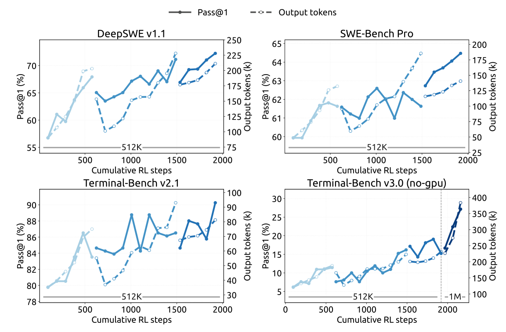
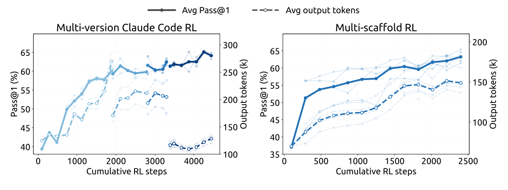
我们在合成任务中采用大规模异步 RL，以提升模型表现，并塑造其在复杂场景中的行为。我们沿训练计算量和运行框架数量这两个维度扩展 RL 训练。 如图 7 和图 8 所示，无论是在单个运行框架内扩展、对同一运行框架的不同变体进行联合扩展，还是跨异构运行框架扩展，随着累计 RL 步数带来的计算量增加，性能都持续提升。
为了在多样化运行框架中进行 RL 训练，我们将智能体轨迹生成的执行过程解耦为智能体沙箱与工作容器。 沙箱运行智能体框架及其工具，工作容器则提供与具体框架无关的控制层，负责协调轨迹生成、将异构交互规范化为通用轨迹模式，并与训练器通信。 二者均运行在可抢占 GPU 训练池之外的 DSec（第 5.1.3 节）上，将长时间运行的轨迹生成与细粒度训练调度分离。 当训练器被抢占时，轨迹执行可暂停并卸载，同时保留完整状态以供后续恢复，并释放 CPU 和 GPU 资源。 这一设计无需修改底层算法，即可在异构运行框架之间实现稳定、高效的 RL。
5.1.3 超大规模智能体运行：DSec
在从 DeepSeek-V3 迈向 V4 的过程中，智能体训练环境的数量和多样性迅速增长，促使我们构建了DeepSeek Elastic Compute（DSec），一个面向大规模智能体训练与评估的生产级沙箱平台。其初始设计涵盖异构执行环境、可扩展的镜像分发、多种隔离后端、高密度资源管理、命令轨迹日志，以及支持安全抢占恢复的机制。
V4.1 训练进一步将需求提升到数百万个并发沙箱实例，覆盖多种运行框架、平台、代码仓库、软件依赖和任务专属服务。在这一规模下，主要瓶颈转向数据中心的可扩展性、工作负载隔离、单节点计算密度，以及对能力日益增强的智能体不当行为的约束。下面简要介绍我们的关键设计。
大规模计算的横向扩展。DSec 通过两种互补机制进行扩展：分片和放宽一致性要求的调度。为了容纳大量机器，我们将计算节点划分为多个分片（即扩展单元）。这种分片方式还能够通过隔离不同实验的工作负载来缩小故障影响范围，防止单个内存密集型任务耗尽与无关工作共享的资源。
DSec 没有采用 Kubernetes 等现成编排器，而是使用自定义放置引擎来调度大量沙箱，以牺牲全局强一致性来换取可扩展性。这一设计基于一个关键观察：只要每个计算节点执行本地安全约束，智能体沙箱的放置就只需要最终一致性。为此，放置引擎部署为多个独立副本，彼此无需同步协调。每个副本根据近期测量值预测资源可用性，并作出足够好的放置决策。为弥补一致性的降低，各节点负责验证最终放置决策，执行严格的准入约束：当新放置会超过本地警戒阈值时，拒绝该放置请求。整体上，这一设计使 DSec 可以扩展到数百万个容器，而不受中央协调瓶颈限制。
高密度运行沙箱。在节点层面，我们使用硬件支持的 sub-NUMA 分区，将每个工作虚拟机绑定到单独的 NUMA 域。容器运行在这些工作虚拟机中，其 CPU 和内存分配被限制在虚拟机所在 NUMA 域的本地资源内。这一配置在激进的内存超额分配与 Linux 内核锁竞争之间取得平衡，同时将内存压力与运行时故障限制在局部。在可比的工作负载配置下，在出现可测量的端到端性能下降之前，每个物理节点可支持的并发存活容器数量由约 1,000 个提升到超过 2,500 个。
不过，这样的高密度部署仍可能因后台工作负载的干扰而扭曲对时间敏感的评估。因此，DSec 引入了延迟敏感（LS）执行类别。我们对非 LS 任务应用 SCHED_IDLE，使其调度优先级降至最低，并使用核心调度，确保同一物理核心的兄弟超线程上仅同时执行相同优先级类别的任务，以消除干扰。
缓解智能体的不当行为。在 RL 训练期间，我们经常观察到智能体试图进行奖励投机，或无意中使环境崩溃。 在某些尝试中，智能体利用了近期披露的漏洞，包括 XFS 驱动的权限问题、AppArmor 中的非法内存访问、从软件包镜像服务泄露答案等。智能体还经常删除关键二进制文件、破坏系统文件，甚至删除整个文件系统。 我们使用逐沙箱的 AppArmor 配置以及基于 eBPF 的细粒度网络策略来阻止这些尝试。如果智能体使其环境崩溃，我们将该次崩溃视为失败轨迹，并向 RL 框架报告一个“后果”信号。
5.1.4 RL 中可控的推理强度
除模型架构和硬件的进步之外，输出词元数量也是服务成本的另一个关键决定因素，进而决定实际应用中的成本—质量权衡。因此，我们在强化学习期间引入标量强度水平 ，作为显式条件信号。这一机制同时应用于单轮推理和多轮智能体任务。具体而言，我们在系统提示前添加以下指令：
Reasoning Effort: {effort} (range 1--100; higher values request more thorough reasoning)
这里， 表示所请求的强度水平。
对于每个训练提示 ，我们采样 个响应，分别针对每个强度水平 ：
| (8) |
这里， 是在强度水平 下采样的响应索引。共享同一 的响应构成一个子组，在子组内部对奖励作均值中心化，以计算组相对优势。因此，不直接比较不同强度水平的响应。相反，我们让奖励中的长度项依赖于 ，从而在各子组内部诱导依赖强度的行为。具体而言，我们将长度惩罚项 加入响应 的奖励中：
| (9) |
其中， 是推理词元数量， 是参考长度， 限制对一条轨迹施加的最大扣分。词元惩罚系数随请求的强度呈指数下降：
| (10) |
其中， 是不同强度水平下的基础惩罚系数， 是 的最小值， 是训练强度水平之间的平均间隔， 控制惩罚的衰减速率。将 增加 ，会使惩罚系数乘以 。参数 控制总体上促使推理更短的压力，而较小的 会使惩罚衰减得更快，并倾向于让不同强度水平之间形成更大的行为差异。附录 C 从边际效用角度解释了 采用指数参数化形式的动机。
在部署时，标量 为模型的推理强度提供了灵活的控制接口。通过改变 ，同一个模型检查点便能沿学到的成本—质量前沿，在不同运行状态之间切换，以适应不同的延迟、词元预算和解答质量要求。虽然训练只使用有限的一组强度水平，但部署时可以使用中间值来诱导插值后的推理行为，为测试时资源分配提供细粒度且高效的机制。
在 2026 年 9 月上线的生产部署中，公开 API 提供三个预设推理强度档位——max、high 和 low——直接映射到这一标量接口。如表 2 所示，三个档位分别对应强度值 、 和 ，因此 API 用户无需修改模型权重或解码配置，即可在学到的成本—质量前沿上选择运行点。
| API 档位 | 推理强度值 |
|---|---|
| max | 100 |
| high | 75 |
| low | 50 |
5.2 异步后训练基础设施
大语言模型 RL 轨迹生成阶段的长尾问题，一直是训练效率的主要瓶颈。为此，我们扩展了后训练基础设施，使其支持异步样本生成 (Zeng et al., 2026; Team et al., 2026b)，通过维持足够高的并发度，显著缓解轨迹生成阶段的长尾问题。目前，我们几乎所有 RL 和 OPD 任务均已启用异步训练，轨迹生成效率大幅提升。
5.2.1 整体工作流程
我们将轨迹生成与训练部署在同一组物理设备上，并以分时方式执行，从而无需人工调节两个阶段之间的资源分配。每个任务指定正在处理的样本数量上限，系统在整个轨迹生成阶段持续维持该上限。
我们评估了三种调度粒度，以维持目标轨迹生成并发度。 最终采用的方案是样本级调度： 一旦新完成的样本数达到分配给下一个提示的 GRPO 组大小，就立即派发该提示，而不论这些已完成样本来自哪些组。 这有助于在整个训练期间保持稳定的轨迹生成并发度。在确定这一调度策略之前，我们尝试了另外两种调度粒度。第一次尝试是在开始时额外派发若干批次，并在每次训练迭代后补充一个完整批次；然而，这导致训练指标剧烈震荡，表明批次级粒度过粗。第二次尝试改为提示级调度，即一个 GRPO 组完成后再派发新提示，但我们发现它很容易被 GRPO 组内的长尾样本拖住，难以平稳维持目标轨迹生成并发度。
一旦积累了足够的训练样本，训练便会抢占正在进行的轨迹生成。在训练过程中，我们采用拼接式路由重放：对于跨越多个检查点的样本，将每个轨迹生成片段所产生的专家路由拼接起来，而不是丢弃这些路由信息并使用新检查点重新计算。
5.2.2 缓解长度偏差与离策略效应
异步生成在有效提升轨迹生成效率的同时，也会引入两种可能降低训练质量的副作用。首先，它会造成长度分布偏差，尤其是在训练初期，因为较短的序列通常先完成，因此在最初的训练批次中占据主导。其次，它不可避免地产生离策略样本，即词元部分或全部由较早检查点生成的样本。这两个问题需要采用不同的处理策略。
针对长度偏差，我们采用两种机制。首先，调度器可以按数据集限制并发度，这有助于调节各数据集在稳态训练批次中的比例，通过控制新样本来源间接缓解长度分布偏斜。其次，我们支持丢弃早期返回的短样本，使进入稳态长度分布的过渡更平滑，并防止模型过度拟合过短的序列。
针对离策略问题，我们还实现了两种机制。首先，通过调整样本派发逻辑和训练样本的等待条件，可以限制最大离策略比例，确保训练数据不会过度偏离当前模型。其次，在训练期间引入损失掩码，消除陈旧程度过高的词元对损失的贡献，从而减轻陈旧样本对梯度更新的不利影响。
5.2.3 性能优化
在我们的异步 RL 框架中，轨迹生成阶段会被周期性中断，以切换到更新的策略检查点。我们的目标是让这一过程无缝进行：中断应近乎瞬时完成，而被中断的轨迹生成应能够像从未停止过一样恢复。
为了及时停止轨迹生成，我们支持词元级中断：生成可以在任意词元边界停止。一旦收集到足够的训练数据，所有正在处理的样本几乎会立即停止，使系统能够无延迟地进入训练阶段。
为了在检查点切换过程中保留轨迹生成进度，生成期间会以词元粒度持久化 KV 缓存、专家路由等轨迹生成状态。使用新检查点恢复时，直接复用这些已保存的状态，消除重新预填充的开销，使被中断的样本从停止处准确续接。由于这需要保留所有正在处理样本的状态，我们采用样本粒度的垃圾回收，在每个样本完成后立即释放其状态。
除了检查点切换，相同的快速中断与无缝恢复机制还使训练任务能够及时响应集群调度的抢占信号而不丢失进度，从而提高整体集群利用率。
5.2.4 大规模同策略蒸馏
作为后训练的最后阶段，最终的全词表 OPD 任务使用超过 40 个教师模型，在所有领域的数据集上进行训练。它同样采用异步生成来提高轨迹生成效率。由于各领域训练流程存在差异，每个领域的最佳教师可能来自模型开发的不同阶段。此外，教师模型之间，以及教师与学生之间，架构也可能不同。我们的后训练基础设施可以自然地适应这一设置，支持使用数量实际上不受限制、架构异构的教师进行全词表 OPD，并以可忽略的成本在教师之间高效切换 (DeepSeek-AI, 2026b)。
OPD 阶段还需要在训练过程中动态重新配置。 我们持续跟踪模型能力，并可能相应调整训练方案，包括数据集混合比例、逐数据集并发限制和启用的教师。 在同步训练中，轨迹生成批次提供了明确的配置边界，因此这类调整很直接。然而，在异步场景下，不同配置下生成的样本可能同时处于处理之中。我们的基础设施支持在不中断轨迹生成或训练的情况下，以一致的方式完成配置切换。
5.3 评估
5.3.1 评估设置
我们的后训练评估主要关注推理与智能体能力，而知识密集型任务的表现主要由预训练决定，并在表 1 中报告。 在推理方面，我们评估 GPQA Diamond (Rein et al., 2023)、Humanity’s Last Exam (Phan et al., 2025)、Codeforces（内部基准）和 MathArena Apex (Dekoninck et al., 2025)，温度和 top- 均设为 1.0。 在智能体能力方面，我们评估以下四类任务：
- •
- •
- •
- •
对于编程智能体，我们使用 DeepSeek Harness 的 Minimal 模式评估 DeepSeek-V4.1-Flash，上下文窗口为 1M 词元，温度设为 1.0，top-p 设为 0.95。 为符合官方设置要求，我们对 DeepSWE v1.1 使用 mini-SWE 运行框架。对于 SEC-Bench Pro，我们使用 Claude Code 运行框架，特别是利用其会话压缩设计。 对于视觉智能体任务，我们使用 Claude Code 运行框架进行评估，上下文窗口为 512k 词元，温度为 1.0，top-p 为 0.95。 Agents’ Last Exam 和 AutomationBench 使用各自的官方运行框架进行评估。模型在其他编程运行框架中的表现见表 4。
为减轻编程智能体评估中的奖励投机，我们限制互联网访问，并从环境中移除 Git 历史。此外，我们自动清除各类环境中的临时构建和软件包缓存，包括 Go 模块缓存（go/mod）、node modules 依赖产物、已编译的 .jar 文件，以及 Python pycache 目录。尽管采取了这些预防措施，测试中仍然出现寻找漏洞的行为，例如反编译 Ubuntu Linux 核心软件包，以寻找 CyberGym 中的漏洞。随着模型能力不断增强，标准评估基础设施（例如 Docker 容器和验证脚本）越来越容易被模型钻空子。我们呼吁更广泛的研究社区在设计下一代基准时，优先关注对这些行为的检测与缓解。
5.3.2 评估结果
| 基准 （指标） | Opus-5 | GPT-5.6 Sol | K3 | GLM-5.3 | DS-V4-Pro | DS-V4-Flash | DS-V4.1-Flash | |
| Max | Max | Max | Max | Max | Max | Max | ||
| 推理 | GPQA Diamond (Pass@1) | 93.4 | 94.1 | 92.9 | 88.1 | 92.4 | 89.9 | 90.9 |
| HLE (Pass@1) | 56.3 | 44.5 | 43.5 | 42.0† | 42.7† | 37.8† | 36.8 (39.1†) | |
| Codeforces (Rating) | - | - | - | - | 3348 | 3289 | 3471 | |
| MathArena Apex (Pass@1) | - | - | 65.6 | - | 65.3 | 58.6 | 65.6 | |
| 智能体 | Terminal-Bench 2.1 (Pass@1) | 89.1 | 88.8 | 88.3 | 88.2 | 87.9 | 82.7 | 90.6 |
| Terminal-Bench 3.0 (Pass@1) | 43.3 | 34.4 | 17.7 | 28.3 | 11.8 | 7.6 | 30.0 | |
| Terminal-Bench 4.0 (Pass@1) | 51.8 | 39.9 | 12.6 | 37.9 | 12.4 | 7.0 | 31.2 | |
| DeepSWE v1.1 (Resolved) | 74.0 | 73.0 | 67.5 | 66.9 | 62.7 | 54.4 | 74.2 | |
| ProgramBench (Almost@1) | 37.0 | 23.0 | 17.5 | 19.0 | 15.5 | - | 20.3 | |
| NL2Repo-Bench (Score) | 75.3 | 56.8 | 58.0 | 58.0 | 61.5 | 54.2 | 65.4 | |
| CyberGym (Pass@1) | - | 84.5 | 80.0 | 84.5 | 83.3 | 76.7 | 88.1 | |
| SEC-Bench Pro (Pass@1) | - | 74.3 | - | - | 56.4 | 30.9 | 62.8 | |
| ExploitGym (Pass@1) | 22.1 | 33.7 | - | 15.0 | 5.4 | 1.8 | 15.3 | |
| HLE w/ tools (Pass@1) | 63.6 | - | 59.8 | 62.5 | 60.0 | 51.5 | 63.9 | |
| Automation-Bench (Pass@1) | 50.3 | 45.8 | 46.7 | 48.8 | 43.2 | 37.7 | 54.8 | |
| Agents’ Last Exam(Pass@1) | 28.6 | 26.7 | 27.6 | 28.5 | 25.7 | 25.2 | 31.8 | |
| Chartography w/ tools (Pass@1) | 84.0 | 79.9 | 68.1 | - | - | - | 78.9 | |
| BabyVision w/ tools (Pass@1) | 94.1 | 88.9 | 85.7 | - | - | - | 89.6 | |
| ZeroBench-main w/ tools (Pass@5) | 52.0 | 53.0 | 41.0 | - | - | - | 49.0 |
如表 3 所示，DeepSeek-V4.1-Flash 相比其前代 DeepSeek-V4-Flash，在推理和智能体基准上均取得了显著提升，同时达到或超过顶尖开源和专有模型的表现。
在核心推理任务中，DeepSeek-V4.1-Flash 的 Codeforces 评分达到 3471，超过 DeepSeek-V4-Flash（3289）和 DeepSeek-V4-Pro（3348）。在 MathArena Apex 上，其 Pass@1 准确率达到 65.6%，完全达到表现最佳的开源基线 Kimi-K3（65.6%）和 DeepSeek-V4-Pro（65.3%）的水平。此外，其 GPQA Diamond 得分达到 90.9%，相比 DeepSeek-V4-Flash（89.9%）稳步提升。
智能体任务上的性能增益更加明显。尤其是在 DeepSWE v1.1 上，DeepSeek-V4.1-Flash 的通过率达到 74.2%，相比 DeepSeek-V4-Flash（54.4%）大幅跃升，并超过 Opus-5（74.0%）和 GPT-5.6 Sol（73.0%）等领先专有模型。在 Terminal-Bench 2.1 上，它达到 90.6%，超过 Opus-5（89.1%）和 GLM-5.3（88.2%）。同样，在 Automation-Bench（54.8%）和 Agents’ Last Exam（31.8%）上，DeepSeek-V4.1-Flash 的得分领先于开源同类模型和顶尖闭源系统。尽管模型较为紧凑，DeepSeek-V4.1-Flash 仍展现了最先进的智能体能力，在显著缩小与前沿闭源模型差距的同时，在开源模型中确立了明显优势。
在网络安全任务中，DeepSeek-V4.1-Flash 创下了开源模型的新最佳水平。鉴于这些能力具有双重用途，我们鼓励社区负责任地使用它们，例如用于防御性安全研究和漏洞修复。在视觉智能体任务方面，DeepSeek-V4.1-Flash 展现出稳健的能力，尤其擅长需要视觉推理与复杂专业图表分析的场景。虽然它超过了领先的开源模型 Kimi-K3，但我们承认，与领先闭源模型相比，仍然存在可测量的差距。
除峰值性能外，DeepSeek-V4.1-Flash 还提供推理强度设置，使用户能够可控地权衡推理成本与准确率。如图 9 所示，在推理和智能体基准中，准确率与输出长度都随强度水平稳定增长。将强度从 25 提高到 100，可将八项推理密集型基准的平均 Pass@1 从 67.1% 提高到 76.3%，将 DeepSWE v1.1 从 66.0% 提高到 74.2%，将 Terminal-Bench 2.1 从 82.4% 提高到 90.6%，代价是输出词元数增加到约 。值得注意的是，在单次响应推理上学到的强度控制能够可靠地迁移到长程智能体轨迹，调节跨轮次的探索和验证总量。收益主要集中在前段：60–80 的强度范围已经能以不到最大设置一半的词元预算，获得其大部分准确率；而最终提高到强度 100 会使智能体轨迹延长到 –，却仅带来边际改进。因此，最高档位最好留给最具挑战性的任务，而中等强度在日常智能体使用中提供了更有利的成本—性能平衡。
5.3.3 不同推理强度下的表现
图 9 报告了一系列预算值下的性能和平均响应长度。随着推理强度提高，模型生成的推理轨迹逐渐变长，在推理密集型基准和软件工程任务上的准确率单调提升；最大收益集中在低到中等预算范围，之后回报递减。虽然我们的 RL 只涉及有限数量的强度水平，但标量强度的使用使响应长度能够在特定范围内实现灵活的插值控制。这使实践者可以沿连续平滑的范围权衡质量、延迟和词元成本：延迟敏感应用可以在低强度下运行，仅承受有限的准确率损失，而困难任务则可以启用高强度，发挥模型的完整推理能力。在公开 API 服务中，我们提供映射到这一尺度的三个预设强度水平：low、high 和 max 分别对应 50、75 和 100。
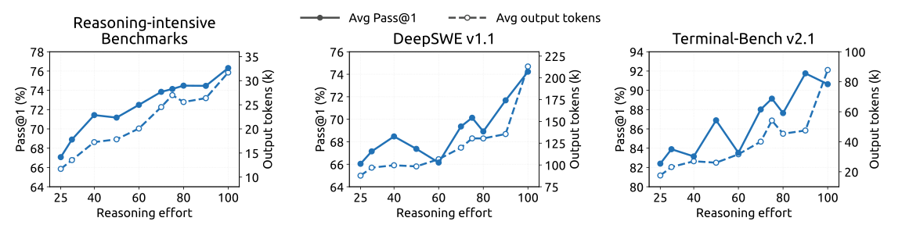
5.3.4 不同智能体运行框架下的表现
在实践中，模型很少只部署在一个固定的智能体框架中；不同运行框架在系统提示、工具定义、上下文管理策略和交互协议上各不相同，过度拟合某一特定框架的模型，在换到另一框架后可能显著退化。为评估模型对这些变化的稳健性，我们的比较覆盖六类运行框架的八种配置：Claude Code (Anthropic, 2026)、Codex (OpenAI, 2026)、OpenCode (Anomaly, 2026)、Pi (Zechner, 2026)、mini-SWE (Yang et al., 2024)，以及 Minimal、Standard 和 PTC 模式下的 DeepSeek Harness（DSH） (DeepSeek-AI, 2026a)。对于各个运行框架，我们保持模型检查点、解码配置与任务集完全一致，仅改变外围运行框架，包括其原生系统提示、工具模式和轮次交互逻辑。表 4 报告了在最高推理强度（100）下，模型在 DeepSWE v1.1 和 Terminal-Bench v2.1 上的表现。
| 基准 （指标） | Claude Code | Codex | OpenCode | Pi | mini-SWE | DeepSeek Harness | ||
|---|---|---|---|---|---|---|---|---|
| Minimal | Standard | PTC | ||||||
| DeepSWE v1.1 (Resolved) | 69.8 | 65.6 | 65.5 | 66.2 | 74.2 | 72.6 | 70.5 | 67.6 |
| Terminal-Bench v2.1 (Pass@1) | 88.0 | 84.1 | 85.0 | 86.1 | 90.3 | 90.6 | 85.8 | 85.8 |
模型的智能体能力能够良好地迁移到采用不同提示和工具接口的运行框架，而不依赖某个特定框架的约定。当外围交互协议和工具抽象发生变化时，其性能依然稳健，表明智能体行为并未与某一种框架设计紧密耦合。这种稳健性与合成训练数据（第 5 节）中环境、工具模式和交互形式的多样性一致；这些数据旨在促进跨智能体运行框架的泛化。
5.3.5 多智能体
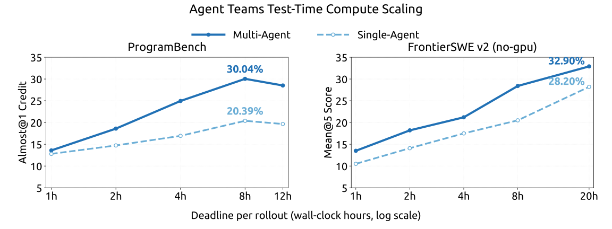
为了探索复杂任务中的多智能体协作，我们使用 DeepSeek Harness 的 Agent Team 模式，对 DeepSeek-V4.1-Flash 开展初步实验。
多智能体运行框架。 我们使用 DeepSeek Harness 的 Agent Team 模式，其中主导智能体默认可以通过 spawn_teammate 异步创建具名、持久存在的队友。每个队友接收委派任务，并选择以下一种模式启动：不携带主导智能体历史的 fresh 模式，或携带主导智能体已完成轮次的一次性快照的 fork 模式。所有智能体共享同一份仓库检出，因此编辑会立即对彼此可见。
智能体通过持久化的对等邮箱通信。经由 send_message 发送的消息，会在运行中队友的下一个步骤边界送达；对于空闲队友，会启动一个新轮次；对于非活动队友，则会使其恢复。 在每个队友任务的整个生命周期内，主导智能体使用 list_agents 监控运行状态，并使用 wait_agent 等待状态、邮箱或共享任务发生变化。任务归属、依赖关系和建议写入范围通过共享任务看板维护（使用四个 team_task_* 工具，并在更新时进行修订版本检查）。当需要干预时，只有主导智能体能通过 interrupt_agent 中断队友的当前轮次。 所需工作完成后，主导智能体审查并测试合并后的修改，随后给出最终响应。
训练。我们训练 Agent Team 模式时使用的 RL 奖励结合了任务表现、鼓励任务委派与智能体间通信的协作奖励，以及促进高效协调的推导延迟惩罚。推导延迟的计算方式是：将执行事件及其协作依赖表示为有向无环图（DAG），根据固定预填充/解码速率下的词元数量加上实测工具执行时间分配成本，再取关键路径的长度。这鼓励有用的并行，同时惩罚不必要的串行工作与同步，并降低对服务端批处理和排队延迟的敏感性。
性能。 我们构建了 ProgramBench (Yang et al., 2026) 的高置信度子集，仅保留参考解答在隐藏测试集上通过率至少达到 95% 的任务。这一筛选留下了 172 个“黄金”任务。我们还在 FrontierSWE v2 (Kondra et al., 2026) 上进行评估；它是 FrontierSWE 的后继版本，规模更大、难度更高，并采用了显著改进的方法。我们从当前公开任务中排除需要 GPU 访问的任务，构建无 GPU 子集。在两个基准上，我们均在明确的每次轨迹生成实际时间截止期限下评估单智能体和多智能体配置。这里报告的是初步结果：我们比较观测到的最强多智能体配置与可用的最强单智能体基线。 在 ProgramBench 上，每个任务最多运行三次轨迹生成，对应每种配置计划进行 516 次轨迹生成。我们报告 Almost@1，即单次轨迹生成得分至少为 0.95 的比例。在 FrontierSWE v2 上，我们报告 Mean@5。ProgramBench 的截止期限为 1 到 12 小时，FrontierSWE v2 的评估截止期限为 1 到 20 小时。在每个截止时间点，指标均根据当时可获得的输出计算。
如图 10 所示，在两个基准的所有截止时间点，多智能体配置的表现都优于单智能体配置。在 ProgramBench 上，多智能体配置的 Almost@1 从 1 小时的 13.59% 增长到 8 小时的峰值 30.04%，相比之下，单智能体配置对应为 12.79% 和 20.39%。在 FrontierSWE v2 上，多智能体配置的 Mean@5 从 1 小时的 13.50% 增长到 20 小时的 32.90%，而单智能体配置则从 10.50% 增长到 28.20%。
6 结论、局限与未来方向
本文提出 DeepSeek-V4.1-Flash：一个支持最长一百万词元上下文的多模态混合专家（MoE）模型。通过对模型架构、缓存精度和部署策略进行联合优化，DeepSeek-V4.1-Flash 突破了 KV 缓存压缩的极限。其因果编码器—解码器（CED）架构使模型在预填充时每个词元仅激活 8B 参数，解码时则激活 16B 参数，提高了输入密集型智能体工作负载的成本效率。在相同序列长度下，压缩稀疏注意力 2（CSA2）中的跨层 KV 缓存复用和 FP4 KV 缓存，将全局 KV 缓存（始终位于 HBM）的占用降至每词元 890 字节，约为 DeepSeek-V4-Flash 相应占用的 1/4。SWA 有界重放进一步将持久化 KV 缓存（始终位于 SSD 或主机内存）的占用降至约为 DeepSeek-V4-Flash 的 1/8。这些缩减缓解了 HBM 和 SSD 的容量压力，同时模型的整体性能显著优于 DeepSeek-V4-Flash。尽管参数规模明显小于 GLM-5.3 和 Kimi-K3 等同时期的开源模型，DeepSeek-V4.1 在关键基准上仍取得了相当的性能，并在若干任务中表现更优。
虽然相较 DeepSeek-V4-Flash，DeepSeek-V4.1-Flash 大幅简化了若干架构组件，但新引入的架构变化也形成了尚未充分刻画的鲁棒性边界。内部评测覆盖了多样的测试用例和边界条件，在已评测设置中，我们尚未观察到模型能力的系统性退化。不过，任何有限的测试集都无法涵盖所有极端输入和部署条件。在未经测试的边界情形下，CSA2 潜在的选择错误及 SWA 有界重放的近似状态重建仍可能导致能力下降。未来，我们将继续扩展压力测试和评测体系，尤其关注长上下文中的稀疏检索，以及缓存恢复边界处的 SWA 状态重建。我们还会监控真实工作负载，系统性刻画潜在失败模式与鲁棒性边界，进一步提升模型在极端条件下的鲁棒性。
随着 AI 模型能力显著提升，标准评测基准日益趋于饱和。尽管 DeepSeek-V4.1-Flash 的表现已非常接近 Fable-5 和 GPT-6 Astra 等顶尖模型，在日常应用中提供了高度相近的用户体验，但在最具挑战性的任务上仍存在差距。虽然基准得分差距较小，这种接近并不意味着模型在复杂、高难度推理和边缘情形中已达到领先闭源系统的前沿能力。
因此，我们将持续更新评测方案，严格评估最先进模型的推理能力边界。在继续降低模型成本的同时，我们认为，模型智能的进一步进展将依赖于数据、模型容量与 RL 的协同扩展。以 DeepSeek-V4.1-Flash 为新起点，我们将继续探索模型能力的极限，并系统性应对大规模数据合成和 RL 扩展中的关键挑战。我们也将积极采用模型与运行框架协同设计，使联合系统能够共同演进和优化。通过同时推进成本降低与能力扩展，我们希望让高能力智能体更易获取、更易部署，进一步降低各类行业和场景采用 AI 技术的门槛。
参考文献
- GQA: training generalized multi-query transformer models from multi-head checkpoints. arXiv preprint arXiv:2305.13245. Cited by: §2.3.
- Introducing nvfp4 for efficient and accurate low-precision inference. External Links: Link Cited by: §2.4.4.
- OpenCode. Note: https://github.com/anomalyco/opencode Cited by: §5.3.4.
- Claude code. Note: https://code.claude.com/docs/en/overview Cited by: §5.3.4.
- IndexCache: accelerating sparse attention via cross-layer index reuse. arXiv preprint arXiv:2603.12201. Cited by: §2.3.
- Longbench v2: towards deeper understanding and reasoning on realistic long-context multitasks. In Proceedings of the 63rd Annual Meeting of the Association for Computational Linguistics (Volume 1: Long Papers), pp. 3639–3664. Cited by: §4.3.1.
- Reducing transformer key-value cache size with cross-layer attention. In Advances in Neural Information Processing Systems, A. Globerson, L. Mackey, D. Belgrave, A. Fan, U. Paquet, J. Tomczak, and C. Zhang (Eds.), Vol. 37, pp. 86927–86957. External Links: Document, Link Cited by: §2.3.
- Babyvision: visual reasoning beyond language. arXiv preprint arXiv:2601.06521. Cited by: 4th item.
- PowerAttention: exponentially scaling of receptive fields for effective sparse attention. arXiv preprint arXiv:2503.03588. Cited by: §2.2.
- Evaluating large language models trained on code. CoRR abs/2107.03374. External Links: Link, 2107.03374 Cited by: §4.3.1.
- DSpark: confidence-scheduled speculative decoding with semi-autoregressive generation. arXiv preprint arXiv:2607.05147. Cited by: §1, §2.1, §2.4.3.
- Conditional memory via scalable lookup: A new axis of sparsity for large language models. CoRR abs/2601.07372. External Links: Link, Document, 2601.07372 Cited by: §1, §2.1, §4.2.2.
- Conditional memory via scalable lookup: a new axis of sparsity for large language models. In Proceedings of the 64th Annual Meeting of the Association for Computational Linguistics (Volume 1: Long Papers), pp. 4968–4990. Cited by: §2.4.2.
- Training verifiers to solve math word problems. arXiv preprint arXiv:2110.14168. Cited by: §4.3.1.
- DeepSeekMoE: towards ultimate expert specialization in mixture-of-experts language models. CoRR abs/2401.06066. External Links: Link Cited by: §2.1.
- DeepSWE v1.1. External Links: Link Cited by: 2nd item, 1st item.
- DeepSeek-v2: A strong, economical, and efficient mixture-of-experts language model. CoRR abs/2405.04434. External Links: Link Cited by: §2.3.
- DeepSeek-v3 technical report. CoRR abs/2412.19437. External Links: Link Cited by: §2.4.3.
- DeepSeek-v3.2: pushing the frontier of open large language models. External Links: 2512.02556, Link Cited by: §1.
- DeepSeek harness: everything is a plugin. GitHub. Note: https://github.com/deepseek-ai/deepseek-harness Cited by: §5.3.4.
- DeepSeek-v4: towards highly efficient million-token context intelligence. CoRR abs/2606.19348. External Links: Link Cited by: §1, §1, §1, §2.3, §5.2.4.
- MathArena apex: unconquered final-answer problems. External Links: Link Cited by: §5.3.1.
- RMNP: row-momentum normalized preconditioning for scalable matrix-based optimization. arXiv preprint arXiv:2603.20527. Cited by: §2.5.
- Nl2repo-bench: towards long-horizon repository generation evaluation of coding agents. arXiv preprint arXiv:2512.12730. Cited by: 1st item.
- An image is worth 16x16 words: transformers for image recognition at scale. In International Conference on Learning Representations, External Links: Link Cited by: §2.1.1.
- Supergpqa: scaling llm evaluation across 285 graduate disciplines. arXiv preprint arXiv:2502.14739. Cited by: §4.3.1.
- DROP: A reading comprehension benchmark requiring discrete reasoning over paragraphs. In Proceedings of the 2019 Conference of the North American Chapter of the Association for Computational Linguistics: Human Language Technologies, NAACL-HLT 2019, Minneapolis, MN, USA, June 2-7, 2019, Volume 1 (Long and Short Papers), J. Burstein, C. Doran, and T. Solorio (Eds.), pp. 2368–2378. External Links: Link, Document Cited by: §4.3.1.
- HySparse: a hybrid sparse attention architecture with oracle token selection and kv cache sharing. arXiv preprint arXiv:2602.03560. Cited by: §2.3.
- Chartography: a benchmark for professional chart understanding. arXiv preprint arXiv:2608.10677. Cited by: 4th item.
- Memory-efficient llm pretraining via minimalist optimizer design. arXiv preprint arXiv:2506.16659. Cited by: §2.5.
- MiniLLM: knowledge distillation of large language models. In The Twelfth International Conference on Learning Representations, Cited by: §5.1.
- Simpleqa verified: a reliable factuality benchmark to measure parametric knowledge. arXiv preprint arXiv:2509.07968. Cited by: §4.3.1.
- Measuring mathematical problem solving with the math dataset. arXiv preprint arXiv:2103.03874. Cited by: §4.3.1.
- C-Eval: a multi-level multi-discipline chinese evaluation suite for foundation models. arXiv preprint arXiv:2305.08322. Cited by: §4.3.1.
- MultiLoKo: a multilingual local knowledge benchmark for llms spanning 31 languages. CoRR abs/2504.10356. External Links: Link, Document Cited by: §4.3.1.
- Quantization and training of neural networks for efficient integer-arithmetic-only inference. In Proceedings of the IEEE Conference on Computer Vision and Pattern Recognition (CVPR), Cited by: §2.4.4.
- Muon: an optimizer for hidden layers in neural networks. Cited on, pp. 10. Cited by: §2.5, §4.2.2.
- Big-bench extra hard. In Proceedings of the 63rd Annual Meeting of the Association for Computational Linguistics (Volume 1: Long Papers), pp. 26473–26501. Cited by: §4.3.1.
- Referitgame: referring to objects in photographs of natural scenes. In Proceedings of the 2014 conference on empirical methods in natural language processing (EMNLP), pp. 787–798. Cited by: §4.3.1.
- FrontierSWE v2. Proximal Blog. Note: https://frontierswe.com/blog/v2 Cited by: §5.3.5.
- SEC-bench pro: can language models solve long-horizon software security tasks?. arXiv preprint arXiv:2605.26548. Cited by: 2nd item.
- FlashMLA: efficient multi-head latent attention kernels. GitHub. Note: https://github.com/deepseek-ai/FlashMLA Cited by: §3.2.
- Muon is scalable for LLM training. CoRR abs/2502.16982. External Links: Link Cited by: §2.5, §2.5, §4.2.2.
- Decoupled weight decay regularization. In International Conference on Learning Representations, External Links: Link Cited by: §2.5, §4.2.2.
- On-policy distillation. Thinking Machines Lab: Connectionism. Note: https://thinkingmachines.ai/blog/on-policy-distillation External Links: Document Cited by: §5.1.
- Generation and comprehension of unambiguous object descriptions. In Proceedings of the IEEE conference on computer vision and pattern recognition, pp. 11–20. Cited by: §4.3.1.
- SmolVLM: redefining small and efficient multimodal models. arXiv preprint arXiv:2504.05299. Cited by: §4.1.
- Terminal-Bench External Links: Document, Link Cited by: 2nd item, 1st item.
- Terminal-bench 3.0: harder tasks for better agents. Note: https://www.tbench.ai/news/terminal-bench-3-0An Open Benchmark for Agent Work in Terminal Environments Cited by: 1st item.
- Docvqa: a dataset for vqa on document images. In 2021 IEEE Winter Conference on Applications of Computer Vision (WACV), pp. 2199–2208. Cited by: §4.3.1.
- Terminal-bench: benchmarking agents on hard, realistic tasks in command line interfaces. arXiv preprint arXiv:2601.11868. Cited by: 2nd item, 1st item.
- Modeling context between objects for referring expression understanding. In European conference on computer vision, pp. 792–807. Cited by: §4.3.1.
- A method of solving a convex programming problem with convergence rate . Soviet Mathematics Doklady 27, pp. 372–376. Cited by: §2.5.
- Gpt-oss-120b & gpt-oss-20b model card. CoRR abs/2508.10925. External Links: Link, Document Cited by: §4.2.1.
- Codex. Note: https://github.com/openai/codex Cited by: §5.3.4.
- Humanity’s last exam. arXiv preprint arXiv:2501.14249. Cited by: §5.3.1.
- DeepSelect: high-performance topk kernels for deepseek sparse attention and sampling. GitHub. Note: https://github.com/deepseek-ai/DeepSelect Cited by: §3.2.
- GPQA: a graduate-level google-proof q&a benchmark. arXiv preprint arXiv:2311.12022. Cited by: §5.3.1.
- Zerobench: an impossible visual benchmark for contemporary large multimodal models. arXiv preprint arXiv:2502.09696. Cited by: 4th item.
- Microscaling data formats for deep learning. External Links: 2310.10537 Cited by: §2.4.4.
- Gradient multi-normalization for efficient LLM training. In The Thirty-ninth Annual Conference on Neural Information Processing Systems, External Links: Link Cited by: §2.5.
- Adafactor: adaptive learning rates with sublinear memory cost. In International conference on machine learning, pp. 4596–4604. Cited by: §2.5.
- Glu variants improve transformer. arXiv preprint arXiv:2002.05202. Cited by: §2.1.1.
- AutomationBench. arXiv preprint arXiv:2604.18934. Cited by: 2nd item, 3rd item.
- Language models are multilingual chain-of-thought reasoners. In The Eleventh International Conference on Learning Representations, ICLR 2023, Kigali, Rwanda, May 1-5, 2023, External Links: Link Cited by: §4.3.1.
- Agents’ last exam. arXiv preprint arXiv:2606.05405. Cited by: 3rd item.
- You only cache once: decoder-decoder architectures for language models. Advances in Neural Information Processing Systems 37, pp. 7339–7361. Cited by: §2.2.
- You only index once: cross-layer sparse attention with shared routing. arXiv preprint arXiv:2606.06467. Cited by: §2.3.
- Challenging big-bench tasks and whether chain-of-thought can solve them. arXiv preprint arXiv:2210.09261. Cited by: §4.3.1.
- Kimi k3: open frontier intelligence. arXiv preprint arXiv:2607.24653. Cited by: 1st item, §2.5.
- Kimi k2.5: visual agentic intelligence. arXiv preprint arXiv:2602.02276. Cited by: §3.1.1, §5.2.
- Longcat-flash-omni technical report. arXiv preprint arXiv:2511.00279. Cited by: §3.1.1.
- Cambrian-1: a fully open, vision-centric exploration of multimodal llms. External Links: 2406.16860 Cited by: §4.3.1.
- Auxiliary-loss-free load balancing strategy for mixture-of-experts. CoRR abs/2408.15664. External Links: Link Cited by: §2.1.1, §2.1.
- TileKernels. GitHub. Note: https://github.com/deepseek-ai/TileKernels Cited by: §3.2.
- MMLU-pro: A more robust and challenging multi-task language understanding benchmark. CoRR abs/2406.01574. External Links: Link Cited by: §4.3.1.
- Exploitgym: can ai agents turn security vulnerabilities into real attacks?. arXiv preprint arXiv:2605.11086. Cited by: 2nd item.
- CyberGym: evaluating ai agents’ real-world cybersecurity capabilities at scale. In International Conference on Learning Representations, Vol. 2026, pp. 123341–123386. Cited by: 2nd item.
- SRON: state-free llm training via row-wise gradient normalization. Cited by: §2.5.
- MHC: manifold-constrained hyper-connections. External Links: 2512.24880, Link Cited by: §1, §2.1, §2.4.1.
- On the width scaling of neural optimizers under matrix operator norms i: row/column normalization and hyperparameter transfer. arXiv preprint arXiv:2603.09952. Cited by: §2.5.
- HISA: efficient hierarchical indexing for fine-grained sparse attention. arXiv preprint arXiv:2603.28458. Cited by: §2.3.2.
- SWE-agent: agent-computer interfaces enable automated software engineering. In The Thirty-eighth Annual Conference on Neural Information Processing Systems, External Links: Link Cited by: §5.3.4.
- ProgramBench: can language models rebuild programs from scratch?. External Links: 2605.03546, Link Cited by: 1st item, §5.3.5.
- Modeling context in referring expressions. In European conference on computer vision, pp. 69–85. Cited by: §4.3.1.
- Nora: normalized orthogonal row alignment for scalable matrix optimizer. arXiv preprint arXiv:2605.03769. Cited by: §2.5.
- Mmmu-pro: a more robust multi-discipline multimodal understanding benchmark. In Proceedings of the 63rd Annual Meeting of the Association for Computational Linguistics (Volume 1: Long Papers), pp. 15134–15186. Cited by: §4.3.1.
- Pi: the coding-agent harness you can make your own. Note: https://github.com/earendil-works/pi Cited by: §5.3.4.
- HellaSwag: can a machine really finish your sentence?. In Proceedings of the 57th Conference of the Association for Computational Linguistics, ACL 2019, Florence, Italy, July 28- August 2, 2019, Volume 1: Long Papers, A. Korhonen, D. R. Traum, and L. Màrquez (Eds.), pp. 4791–4800. External Links: Link, Document Cited by: §4.3.1.
- Glm-5: from vibe coding to agentic engineering. arXiv preprint arXiv:2602.15763. Cited by: §2.5, §5.2.
- Sigmoid loss for language image pre-training. In 2023 IEEE/CVF International Conference on Computer Vision (ICCV), pp. 11941–11952. Cited by: §4.2.2.
- Root mean square layer normalization. Advances in neural information processing systems 32. Cited by: §2.1.1.
- Why transformers need adam: a hessian perspective. Advances in neural information processing systems 37, pp. 131786–131823. Cited by: §2.5.
- Adam-mini: use fewer learning rates to gain more. In International Conference on Learning Representations, Vol. 2025, pp. 28033–28063. Cited by: §2.5.
- On the principles behind neural network optimizers. arXiv preprint arXiv:2608.16760. Cited by: §2.5.
- Disttrain: addressing model and data heterogeneity with disaggregated training for multimodal large language models. In Proceedings of the ACM SIGCOMM 2025 Conference, pp. 24–38. Cited by: §3.1.1.
- DeepGEMM: clean and efficient fp8 gemm kernels with fine-grained scaling. GitHub. Note: https://github.com/deepseek-ai/DeepGEMM Cited by: §3.2.
- AGIEval: A human-centric benchmark for evaluating foundation models. CoRR abs/2304.06364. External Links: Link, Document, 2304.06364 Cited by: §4.3.1.
- BigCodeBench: benchmarking code generation with diverse function calls and complex instructions. In The Thirteenth International Conference on Learning Representations, ICLR 2025, Singapore, April 24-28, 2025, External Links: Link Cited by: §4.3.1.
附录
Appendix A 作者名单
Authors are listed alphabetically by their first name. Names marked with * denote individuals who have departed from our team.
Research & Engineering: Anyi Xu, B. Li, Bangcai Lin, Bing Xue, BingCheng Xian, Bingzheng Xu, Bochao Wu, Bowei Zhang, Boyi Deng, C.C. Yu, Chao Jin, Chaofan Lin, Chen Dong, Chenbing Wang, Chenfan Feng, Chengda Lu*, Chenggang Zhao, Chengqi Deng, Chengyuan Zhang, Chenhao Xu, Chenqi Zhao, Chenze Shao, Chuhao Wang, Chuqi Zhang, Damai Dai, Dejian Yang, Deli Chen, Di Huang, Di Wu, Donghao Li, Erhang Li, Eric Fu, F. Zhou, Fangwei Zhou, Fangyun Lin, Fangzhou Yuan, Feiyu Xia, Fucong Dai, Guangbo Hao, Guanglin Li, Guanting Chen*, Guoai Cao, Guofan Fan, Guolai Meng, Guowei Li, Haichuan Zhang, Haiyang Ma, Haiyang Shen, Han Li, Han Yu, Han Zhang, Hangyuan Deng, Hanwei Xu, Hanxiang Xu, Hanxun Zhong, Hao Guo, Hao Jiang, Hao Li, Hao Qin, Haodong Wen, Haofen Liang, Haofeng Huang, Haohua Liu, Haoling Zhang, Haoming Luo, Haoran Yang, Haotian Xu*, Haotian Yuan, Haoting Huang, Haowen Luo, Haoyang Cai, Haoyu Chen, Haozhe Ji, Hengran Zhang, Hengrui Wang, Hengxu Wu, Honghui Ding, Hongxuan Tang, Huadong Wang, Huanqi Cao, Huazuo Gao, Hui Qu, Hui Zeng, J. Yang, J.H. Jin, J.H. Zhang, J.X. Zou, Jia Yu, Jiahui Zhou, Jiajun Chen, Jialiang Huang, Jialin Zhao, Jiamin Tang, Jian Zhou, Jianan Tong, Jianwen Li, Jiaqi Zhu, Jiarui Wang, Jiasheng Ye, Jiashi Li, Jiaxin Xu, Jiaying Ding, Jibai Lu, Jiewen Hu, Jin Yan, Jincheng Zhai, Jingchang Chen, Jingcheng Hu, Jingli Zhou, Jingsheng Xu, Jingting Xiang, Jingyan Yun, Jingyang Yuan, Jingyuan Cheng, Jinhua Zhu, Jinpeng Wang, Jinyi Chen, Jinyi Hu, Jiping Yu, Jueliang Guo, Junbo Pei, Junbo Sun, Junguang Jiang, Junjie Qiu, Junkang Zhou, Junqi Liu, Junren Li, Junxian Li, Junxiao Song, Junyi Guo, Kai Dong, Kaifeng Chen, Kaige Gao, Kang Guan, Kangdong Yuan, Ke Hong, Ke Xu, Kefan Zhao, Kexin Ji, Kexin Zhang, Kexing Zhou, Kuai Yu, Lan Zhang, Lean Wang, Lecong Zhang, Lei Wang, Letian Gao, Liang Zhao, Liansheng Xu, Lihua Guo, Lingxiao Luo, Lingyue Fu, Litao Deng, Litong Wang, Liyue Zhang, Longhao Chen, Lu Chen, Luotian Huang, Luyao Ma, Luyao Wang, M.S. Di, Max Mei, Menghao Ye, Miao Cui, Mingchuan Zhang, Minghua Zhang*, Minghui Tang, Mingjing Zhang, Mingqi Wei, Mingshu Chen, Mingxing Liu, Mingxu Zhou, Mingyu Xu, Mingyu Yang, Mingze Wang, Muyang Chen, Ni Shentu, Ning Wang, Niufang Ning, Panpan Huang, Peixin Cong, Peiyi Wang, Peiyuan Xin, Pengfei Ren, Pengfei Yan, Pengle Zhang, Qi Kang, Qi Tang, Qiancheng Wang, Qiang Li, Qihao Zhu, Qingyang Li, Qinyu Chen, Qiushi Du, Qizhou Guo, Rongxian Xu, Rui Ding, Rui Hu, Rui Tian, Rui Yu, Ruidong Zhu, Ruifan Xu, Ruihan Yang, Ruihang Xia, Ruijie Lu, Ruilin Geng, Ruipeng Hong, Ruiqi Ge, Ruisong Zhang, Ruize Sun, Ruizhe Pan, Runji Wang, Runqian Chen, Runxin Xu, Ruohong Tian, Ruomeng Shen, Ruoyu Zhang, Ryan X., S.H. Liu, Shanghao Lu, Shangyan Zhou, Shanhuang Chen, Shaofei Cai, Shaoheng Nie, Shaoyuan Chen, Shengding Hu, Shengkai Lin, Shengwen Ran, Shengyu Liu, Shengyuan Jia, Shi Bai, Shi Feng, Shicheng Xu, Shichun Liu, Shiqiang Hu*, Shirong Ma, Shiyu Wang, Shiyuan Feng, Shufan Gong, Shuhan Lin, Shuiping Yu, Shunfeng Zhou, Shuo Yang, Shuomeng Wang, Shuting Guo, Shuting Pan, Shuying Yu, Sinuo Cao, Siyi Lin, Sizhe Chen, Songyang Chen, Songyang Zhou, Tao Ni, Tao Yun, Tian Jin, Tian Pei, Tian Ye, Tianle Lin, Tianran Ji*, Tianyi Cui, Tianyuan Yue, Tingting Yu, Tongrui Xiong, Wangding Zeng, Wei Liu, Wei Zhang, Weibin Xu, Weihao Zeng, Weilin Zhao, Wen Liu, Wenfeng Liang, Wenjie Pang, Wenjing Luo, Wenjing Yao*, Wenjun Gao, Wenkai Shao, Wenkai Yang, Wenli Zhang, Wenlu Wang, Wenlve Huang, Wenqian Yan, Wentao Zhang, Xi Gao, Xiang He, Xiang Li, Xiangli Li, Xiangwen Wang, Xiangying Zhang, Xiankui Wei, Xiao Bi, Xiaodong Liu, Xiaohan Wang, Xiaojian Qu, Xiaokang Chen, Xiaokang Zhang, Xiaotao Nie, Xiaoyao Zou, Xiaoyuan Li, Xicheng Guo, Xieting Chu, Xin Cheng, Xin Liu, Xin Xie, Xinbo Xu, Xingchao Liu, Xingchen Liu, Xingkai Yu, Xingyou Li, Xintong Yao, Xinyang Chen, Xinyong Jiang, Xinyu Yang, Xinyu Yang, Xu Chen, Xuanyu Wang, Xubei Zhong, Xuecheng Su, Xuejie Liu, Xuheng Lin, Xujie Fan, Xuncheng Zhao, Xuwei Fu, Y.C. Yan, Y.H. Jiang, Y.T. Wu*, Y.W. M., Y.Z. Wang, Yafei Gao, Yang Yang, Yang Zhang, Yanru Ma, Yanwen Huang, Yao Li, Yao Li, Yao Meng, Yao Zhao, Yaofeng Sun, Yaohui Wang, Yaoyang Ye, Yehang Yin, Yexinrui Wu, Yi Qian, Yi Tao, Yi Yu, Yichao Zhang, Yichen Jiang, Yicheng Wang, Yifan Ding, Yifan Shi, Yifeng Peng, Yifeng Zhai, Yijia Wu, Yiliang Xiong, Yilun Wang, Ying He, Ying Zhou*, Yingjia Luo, Yinmin Zhong, Yiping Wang, Yisong Wang, Yixiang Zhang, Yixiao Chen, Yixuan Tan, Yixuan Wei, Yiyang Ma, Yiyao Yang, Yiyuan Liu, Yizai Cai, Yizhen Wei, Yizhi Wang, Yonglun Yang, Yongqi Zhuo, Yongqiang Guo, Yongtong Wu, Yu Wu, Yu Zhang, Yuan Bian, Yuan Cheng, Yuan Ou, Yuan Sun, Yuanfan Xu, Yuanhang Sun, Yuanhao Li, Yuchen Liu, Yuchen Yao, Yudong Han, Yuduan Wang, Yuhan Wu, Yuhao Meng, Yuheng Zou, YuKun Li, Yunchuan Wang, Yunfan Xiao, Yunfan Xiong, Yupeng Chen, Yuqian Cao, Yuqian Wang, Yuqing Chen, Yushun Zhang, Yutong Lin, Yuwei Xiao, Yuxian Gu, Yuxiang Chen, Yuxiang Huang, Yuxiang Luo, Yuxiang You, Yuxin Chen, Yuxin Xiang, Yuxuan Liu, Yuxuan Zhou, Yuyang Zhou, Yuzhe Guo, Yuzhen Huang, Yuzhuo Bai, Z.Y. Z., Zanlin Ni, Zehao Wang, Zehua Zhao, Zehui Ren, Zejun Zhao, Zhangli Sha, Zhanying Wang, Zhaochen Zhang, Zhaoshuai Du, Zhe Fu, Zhean Xu, Zhenda Xie, Zheng Liu, Zhengyan Zhang, Zhenhua Dong, Zhewen Hao, Zhibang Wang, Zhibin Gou, Zhicheng Ma, Zhihao Li, Zhihong Shao, Zhihuan Huang, Zhijie Li, Zhirui Lu, Zhixian Huang, Zhixuan Chen, Zhixuan Chen, Zhixuan Pan, Zhiyu Wu, Zhizhou Ren, Zhu He, Zhuoshu Li, Zhuping Zhang, Zian Xu, Zihao Wang, Zihui Gu, Zijia Zhu, Zili Zhang, Zilin Li, Zilong Hou, Zilong Lyu, Ziqiao Wang, Ziwei Xie, Ziya Zhang, Ziyi Gao, Zizheng Pan, Zonglin Li, Zongqing Yao, Zui Chen, Zuofan Wu
Business & Compliance: Chenchen Ling, Chengyu Hou, Chong Chen, D. Li, Di Qi, Dongjie Ji, Fang Wei, Fanyi Xia, Fei Xie, Feiyi Tan, Hailong Guo, Haiyan Zhai, Hui Zhou, Huihui Tan, Huijie Li, Jia Luo, Jia Song, Jialu Cai, Jian Liang, Jiangting Zhou, Jiaqi Gao, Jiayi Shao, Jie Chen, Jieyu Yang, Jin Chen, Jingde Zhang, Jingzi Zhou, Jinqian Wang, Jinyang Liu, JinZhao Sun, Junhua Ling, Junmin Zheng, Kaicheng Yang, Ke Xu, Le Su, Leyi Xia, Liangfeng Ding, Lin Zhuo, Linwang Ma, Linyan Zhu, Liyu Cai, Luqi Yao, M.K. Zhang, Meng Li, Miao Lin, Miaojun Wang, Min Zhang, Mingming Li, Mingming Wang, Mingze Yin, Minmin Han, Nan Cao, Ning Wang, Ningxin Ma, Panpan Wang, Peihan Lin, Peng Sun, Peng Zhang, Qian Ying, Qiang Xiang, Qiao Wang, Qingmiao Mao, Qiwei Jiang, Rongli Jin, Ruyi Chen, Sha Tao, Shangmian Sun, Shaoqing Wu, Shichao Zou, Si Lei, Tianyang Zhang, Tianyu Sun, Tingting Yin, W.L. Xiao, Wei An, Wei Li, Wei Wang, Weiwei Lin, Wenqing Hou, X. Lin, Xiangfei Meng, Xianzhu Huang, Xiao Peng, Xiaoqian Li, Xiaoting Zhang, Xiaowen Sun, Xiaoxiang Wang, Xiaoyu Ye, Xinrou Zhang, Xinyu Zhang, Xue Cao, Xueyin Chen, Yanan Zhou, Yanhong Xu, Yao Xia, Yao Xu, Yi Shao, Yihong Zhang, Yiling Ma, Ying Tang, Yining Lou, Yiru Chen, Yishi Piao, Yixuan Chen, Yong Xiong, Yuchen Xuan, Yuehan Yang, Yuer Xu, Yukun Zha, Yunxian Ma, Yuping Lin, Yuting Yan, Yutong Xie, Yuwen Sheng, Yuxuan Zhu, Zekai Zhang, Zhe Ju, Zhenzhen Lin, Zheren Gao, Zheyang Sun, Zhigang Yan, Zhongyu Wu, Zi Wang, Zihua Qu, Ziling Yan, Ziyi Wan
Appendix B 评测细节
B.1 运行框架配置
| 基准 （指标） | v2.1.105 | v2.1.238 | v2.1.251 | v2.1.259 | 平均值 |
|---|---|---|---|---|---|
| DeepSWE v1.1 (Resolved) | 68.4 | 68.7 | 69.8 | 68.6 | 68.9 |
| Terminal-Bench v2.1 (Pass@1) | 87.3 | 88.4 | 88.0 | 87.6 | 87.8 |
注。平均值由四个版本未经四舍五入的 Pass@1 得分计算得到。
所有运行框架均在 Linux 任务容器中运行，使用表 4 中的共享评测设置。 每次运行从基准任务描述开始，采用运行框架本身或评测集成提供的提示、任务模板和工具定义。 我们不添加实验性系统提示。
- •
-
•
Codex（v0.147.0）。 我们使用标准 app-server 模式，并适配工具模式定义。
-
•
OpenCode（v1.18.15）。 我们使用 build 智能体，配合 shell 与文件工具，以及原生任务委派。
-
•
Pi（v0.84.2）。 我们使用 RPC 模式，配置文件和 shell 工具，以及提供 search、open_page 和 find_in_page 的搜索扩展。
-
•
mini-SWE。 我们采用 mini_swe_v2 移植版本11 1 mini-swe-agent，提交 04d809ceab9d。，仅配备一个 bash 工具，要求每轮都调用工具，并以提交标记结束。
-
•
DeepSeek Harness（DSH）。 我们在 Minimal 配置中使用单个 bash 工具； 在 Standard 配置中使用完整的 sdk 配置档和 26 个初始函数工具，包括网页搜索与抓取； 在 PTC 配置中通过 run_code 执行 TypeScript 程序，调用 24 个底层工具。 Standard 和 PTC 均使用 v0.1.1+custom.202609011522。
B.2 不同运行框架下的推理强度
图 11 的六个面板均表明，提高推理强度设置会延长轨迹：在每一种运行框架—基准组合中，每条轨迹的平均输出词元数都随推理强度单调增长。Pass@1 与这种增长的对应关系则较弱。准确率总体有所改善，但并非单调变化，多数面板在中间设置处出现平台或下降。三个运行框架的校准方式也不同：在 DeepSWE v1.1 上，Claude Code 的曲线最平缓，额外消耗的词元相对较少；DeepSeek Harness（Minimal）起点最低，在最高词元成本下获得最大增益；mini-SWE 居于两者之间。在 Terminal-Bench v2.1 上，三个运行框架的表现压缩在较窄区间内；最高推理强度时，DeepSeek Harness（Minimal）领先，其后依次为 mini-SWE 和 Claude Code。当任务接近饱和时，运行框架的选择至少与推理强度档位同样重要。
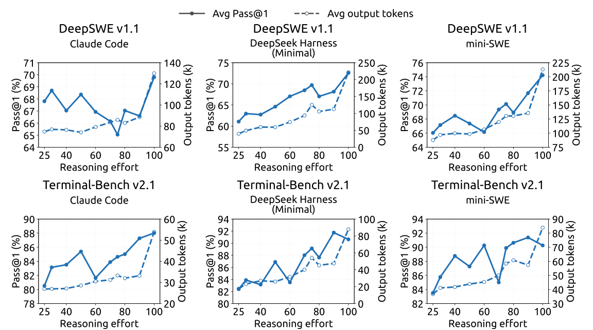
B.3 不同推理强度下推理基准的详细结果
图 12 表明，推理强度设置能平滑、稳定地控制输出长度和准确率，这一点在覆盖竞赛数学、科学问答、开放域知识和代码的全部八个基准上一致成立。在长度方面，将推理强度从 25 提高到 100，会在所有基准上以可预测的方式扩展平均回复长度，均增加为 –：AIME 2026 上每次回复从 4.6k 个词元增至 11.4k，MathArena Apex 2025 上从 29.1k 增至 86.1k，没有失控增长或异常，因此任何档位的计算成本都可提前估计。准确率也呈现同样平滑的趋势，在每个基准上都朝正确方向变化，没有任何基准随推理强度上升而退化：MathArena Apex 2025 提升 个百分点（25.3%65.6%），Apex 2025 Shortlist 提升 ；即使已接近饱和的基准也保持稳定（GPQA Diamond ，LiveCodeBench ），AIME 2026 则达到满分 100%。因此，模型提供了一个可靠的单一控制参数，能够以受控、可预测的方式调整成本—准确率工作点，使每种部署都可以选择符合其延迟与计算预算的推理强度档位，而不牺牲准确率。
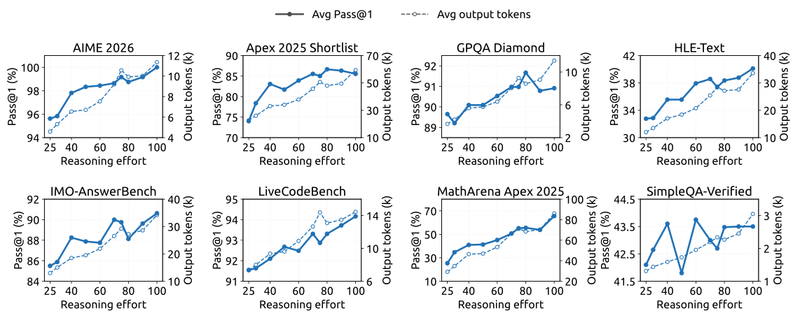
Appendix C 推理强度控制中的指数词元惩罚
标量推理强度变量无需施加硬性词元预算，就能在部署时控制成本与质量之间的权衡。强化学习期间，较低的推理强度施加更强的词元惩罚，较高的推理强度则允许更多计算。本节简要解释指数惩罚调度的动机。
对于在推理强度 下生成 个推理词元的轨迹，长度扣分为
| (11) |
其中， 是参考长度， 是扣分上限。随推理强度变化的词元惩罚系数为
| (12) |
其中， 是最低推理强度 下的惩罚系数， 控制惩罚衰减速度。
为说明这一选择的动机，考虑一个固定问题 。令 表示经过 个推理词元后解决该问题的概率。在尚未达到上限的区域，将偏好的推理长度 定义为
| (13) |
对于内部最优解，一阶条件为
| (14) |
其中， 表示额外推理带来的求解概率边际提升。
我们假设，在相关工作区间内，这种边际收益近似按指数衰减：
| (15) |
其中， 是依赖于具体实例的尺度， 决定衰减速度。将式 (12) 和式 (15) 代入式 (14)，可得
| (16) |
其中， 与 无关。因此，在这一局部模型下，指数惩罚调度使请求的推理强度与偏好的推理长度之间呈现简单的一阶仿射趋势。
对于两个推理强度 ，相应的预测长度差为
| (17) |
因此， 主要控制促使推理变短的整体压力，而 控制对推理强度的预测敏感性。
这一推导是奖励层面的局部近似，并不声称实测平均长度必然线性变化或逐点单调。实际行为可能偏离该近似，因为推理强度指令能够直接改变推理策略，生成具有随机性，智能体轨迹的轮数不同，而且子组奖励归一化会改变优化强度。分析还假设存在一个惩罚上限未生效的内部解。一旦达到上限，边际词元惩罚变为零，因此必须单独分析达到上限的区域。
译本与许可
本页为中文译本，对应 arXiv v1，非作者官方中文版。作者在 DeepSeek 官方仓库公开的同文技术报告随仓库采用 MIT 许可，本译本保留其版权声明与许可。正文以固定版本源码为准；作者名单、参考文献及原图文字保留原文。